★系统说明
┣ ☆游戏介绍
┣ ☆基本操作说明
┣ ☆特殊操作说明
┣ ☆常见设施说明
┣ ☆常见物品说明
┗ ☆能力提升系物品说明
★流程攻略
┣ ☆太空海盗船 Space Pirate Frigate
┃ ┗ ☆Boss战：Parasite Queen
┣ ☆森林世界 Tallon Overworld
┣ ☆遗迹世界 Chozo Ruins
┃ ┣ ☆Boss战：Hive Mecha
┃ ┣ 获得装备： 导弹 Missile Launcher
┃ ┣ ☆Boss战：Plated Beetle
┃ ┣ 获得装备： 变形球 Morph Ball
┃ ┣ 获得装备： 蓄力枪 Charge Beam
┃ ┣ ☆Boss战：Incinerator Drone
┃ ┣ 获得装备： 球炸弹 Morph Ball Bomb
┃ ┣ ☆Boss战：Flaahgra
┃ ┗ 获得装备： 抗热铠甲 Varia Suit
┣ ☆熔岩世界 Magmoor Caverns
┣ ☆冰雪世界 Phendrana Drifts
┃ ┗ 获得装备： 冲击球 Boost Ball
┣ ☆熔岩世界 Magmoor Caverns
┣ ☆森林世界 Tallon Overworld
┃ ┣ 获得装备： 太空靴 Space Jump Boots
┃ ┗ 获得物品： 第一神器 Artifact of Truth
┣ ☆熔岩世界 Magmoor Caverns
┃ ┗ 获得物品： 第二神器 Artifact of Strength
┣ ☆冰雪世界 Phendrana Drifts
┃ ┣ ☆Boss战：Sheegoth
┃ ┣ 获得装备： 电磁枪 Wave Beam
┃ ┣ 获得装备： 超级导弹 Super Missile
┃ ┣ 获得装备： 感热视镜 Thermal Visor
┃ ┣ ☆Boss战：Thardus
┃ ┗ 获得装备： 蜘蛛球 Spider Ball
┣ ☆熔岩世界 Magmoor Caverns
┣ ☆遗迹世界 Chozo Ruins
┃ ┗ 获得装备： 冰冻枪 Ice Beam
┣ ☆森林世界 Tallon Overworld
┣ ☆冰雪世界 Phendrana Drifts
┃ ┗ 获得装备： 重力铠甲 Gravity Suit
┣ ☆森林世界 Tallon Overworld
┣ ☆矿坑世界 Phazon Mines
┃ ┣ ☆Boss战：幻影战机
┃ ┣ 获得装备： 超级炸弹 Power Bomb
┃ ┗ 获得装备： 光电索 Grapple Beam
┣ ☆森林世界 Tallon Overworld
┃ ┣ 获得装备： 透视视镜 X-Ray Visor
┃ ┗ 获得物品： 第七神器 Artifact of Chozo
┣ ☆熔岩世界 Magmoor Caverns
┃ ┗ 获得装备： 火焰枪 Plasma Beam
┣ ☆冰雪世界 Phendrana Drifts
┃ ┣ 获得物品： 第十一神器 Artifact of Spirit
┃ ┗ 获得物品： 第三神器 Artifact of Elder
┣ ☆熔岩世界 Magmoor Caverns
┃ ┣ 获得装备： 冰冻导弹 Ice Spreader
┃ ┗ 获得物品： 第八神器 Artifact of Nature
┣ ☆遗迹世界 Chozo Ruins
┃ ┣ 获得物品： 第四神器 Artifact of Wild
┃ ┣ 获得物品： 第五神器 Artifact of Lifegiver
┃ ┣ 获得装备： 电磁导弹 Wavebuster
┃ ┗ 获得物品： 第十神器 Artifact of World
┣ ☆矿坑世界 Phazon Mines
┃ ┣ 获得装备： 火焰导弹 Flamethrower
┃ ┣ 获得物品： 第六神器 Artifact of Warrior
┃ ┣ ☆Boss战：Omega Pirate
┃ ┣ 获得装备： 终极铠甲 Phazon Suit
┃ ┗ 获得物品： 最终神器 Artifact of Newborn
┣ ☆森林世界 Tallon Overworld
┃ ┗ ☆Boss战：Meta Ridley
┣ ☆陨石坑 Impact Crater
┃ ┣ ☆Boss战：Metroid Prime
┃ ┗ ☆Boss战：Metroid Prime
┗ ☆THE END
| 按键 | 第一视点操作(人) | 第三视点操作(球) | 地图状态 |
| 左摇杆 | 移动 | 移动 | 旋转地图 |
| 十字键上 | 切换为战斗视镜 | -- | -- |
| 十字键左 | 切换为扫描视镜 | -- | -- |
| 十字键右 | 切换为透视视镜 | -- | -- |
| 十字键下 | 切换为感热视镜 | -- | -- |
| A键 | 射击/按住为蓄力射击 | 放置炸弹(最多3个) | 切换为世界地图/局部地图 |
| B键 | 跳跃/按2次为两段跳 | 按住并放开为冲击球 | 退出地图状态 |
| C键上 | 切换为光弹枪 | -- | 移动地图 |
| C键左 | 切换为火焰枪 | -- | 移动地图 |
| C键右 | 切换为电磁枪 | -- | 移动地图 |
| C键下 | 切换为冰冻枪 | -- | 移动地图 |
| X键 | 切换为球状态 | 切换为人状态 | -- |
| Y键 | 发射导弹/按住A蓄力后再按为发射超级导弹 | 放置超级炸弹 | 切换按键提示 |
| Z键 | 查看地图 | 查看地图 | 退出地图状态 |
| L键 | 扫描/锁定敌人或目标/发射光电索 | 切换视角或方向 | 地图缩小 |
| R键 | 配合左摇杆按住为移动视角 | 按住为蜘蛛球状态 | 地图放大 |
| START键 | 暂停/查看装备和选项 | 暂停/查看装备和选项 | -- |
| 注意：以上标注为红色的内容是需要得到相应的装备后才能操作使用 |
| 操作名称 | 状态 | 操作方法 |
| 扫描 | 人 | 切换为扫描视镜后对目标按住L键 |
| 锁定移动 | 人 | 按住L键锁定目标后按左摇杆可以围绕目标移动 |
| 快速躲闪 | 人 | 锁定移动过程中快速按2次B键 |
| 炸弹跳 | 球 | 按A键炸弹爆炸后球会跳起，这时按左摇杆可以在空中移动方向 |
| 冲击球 | 球 | 在圆台上移动时按住B键并放开就可以冲上圆台/反复冲击即可冲得更高 |
| 双炸弹跳 | 球 | 放第一个炸弹，弹起前一瞬间放第2个炸弹，跳到空中最高点时放第3个炸弹。这个操作可以跳到2个炸弹的高度 | 它不是必需的，但是想要100%收集的话就必须要学会 |
| 三炸弹跳 | 球 | 似乎没有ING^^ |
| ☆常见设施说明：查看地图就可以知道这些设施的重要性 |
| 地点 | 地图标志 | 说明 |
| 电梯 | E | 乘坐电梯可到达其他区域 |
| 武器补充点 | M | 补充全部武器 |
| 记忆点 | S | 游戏记录/恢复全部体力 |
| 游戏提示 | ？ | 无目的的漫游一段时间后就会出现游戏提示，告诉你下一步应该去哪里 |
| 兰色门 | ■ | 用任意枪打开 |
| 紫色门 | ■ | 用电磁枪打开 |
| 白色门 | ■ | 用冰冻枪打开 |
| 红色门 | ■ | 用火焰枪打开 |
| 灰色门 | ■ | 用导弹打开 |
| 注意：灰色门只要打开一次以后就会变成兰色门 |
| 物品名称 | 形状描述 | 用途 |
| 紫色能量球 | 紫色小球 | 回复10 ENERGY |
| 红色能量球 | 红色小球 | 回复20 ENERGY |
| 黄色能量球 | 黄色小球 | 回复100 ENERGY |
| 导弹补给 | 导弹形状 | 补充5颗导弹 |
| 超级炸弹补给 | 超级炸弹形状 | 补充1颗超级炸弹 |
| 物品名称 | 英文名称 | 用途 |
| 导弹槽 | Missile Expansion | 提升导弹数量5 |
| 能量槽 | Energy Tank | 提升体力100 |
| 超级炸弹槽 | Power Bomb Expansion | 提升超级炸弹数量1 |
| ★流程攻略 |
| 含100%物品收集/100%扫描收集/BOSS攻略 |
| 攻略字体颜色提示 |
| 棕色：关键操作 |
| 蓝色：重要装备 |
| 绿色：物品收集 |
| 橙色：扫描记录 |
| 红色：有限次扫描记录（全部错过就没有了） |
Unidentified Distress Beacon
has been tracked to a derelict space vessel
in orbit above Tallon IV.
| ☆太空海盗船 Space Pirate Frigate |
女主角Samus接到Tallon IV星球上空有不明飞船的消息，驾驶Gunship来到这个空间站。这是一艘太空海盗船，但是静的出奇，好象没有一点防御准备。
首先，了解一下第一特色系统：锁定（LOCK ON），按住L键即可锁定目标，前方的门上有4个红灯，一一锁定以后按A键射击即可全部变绿，通道打开。
接下来了解游戏的另一个重要系统：扫描（SCAN），先按十字键左切换到扫描视镜，然后荧幕中央会出现扫描视窗，可扫描的物体会呈现橙色或红色的图示，红色的表示重要目标。对准目标按住L键即可进行扫描，扫描进度条满之后即成功。这里有一个兰色的圆形装置，扫描它即可启动旁边门上的6个开关。
下面就该了解调整视角寻找目标了，6个开关有2个在上方，需要先按住R键再按左摇杆来进行锁定，把6个开关全部射击成绿色，通道打开。
| 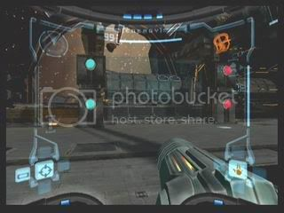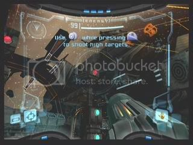 |
| 调整视角：用于查看周边情况以及寻找视野外的目标 |
按B键可跳跃，最后进入飞船内部前可以看到兰色门，用普通的光弹枪射击即可打开门。
进入Air Lock，扫描左边墙壁上突出的装置，前方的门就会启动，继续前进。
来到Emergency Evacuation Area，走下阶梯后会看到几只虫子在撕咬海盗的尸体，从这里就要开始了解游戏重要的收集系统：记录（LOGBOOK）了。切换成扫描视镜，对准虫子进行扫描，成功后它的资料就会被记录到LOGBOOK中去。游戏中的敌人，生物，设施，文化都可以扫描记录，达成不同的扫描率在通关后就可以开启相应的隐藏要素。本区域扫描记录：[Creatures] Parasite，这个虫子在这几个区域忘记扫描以后就碰不到了，所以一定要扫描记录以后再消灭它。后面可随时扫描的记录用橙色表示，有限制次数的扫描记录用红色表示，假如你想挑战100%扫描，那么从这里就该开始了。
| 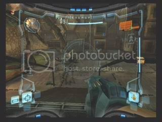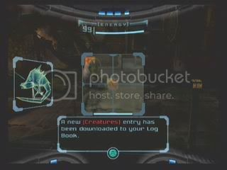 |
| 扫描记录：用于收集游戏中的重要物品扫描资讯 |
进门来到Deck Alpha Umbilical Hall，通道中间被杂物挡住了，需要使用蓄力攻击 Charge Beam干掉，方法是武器为普通光弹枪时按住A键，在枪口能量聚集后松开A键即可使用强力攻击。这个攻击不仅威力大，而且可以将周围消灭敌人后留下的战利品吸过来，所以要多加利用啊。
| 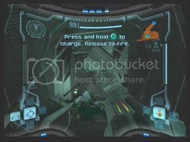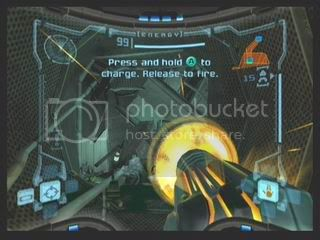 |
| 蓄力攻击：强力攻击以及吸收附近的补给品 |
进入Map Facility，会看到几只小昆虫从一个洞中爬了进去。这个入口太小，只能了解怎么使用变形球 Morphball了。按X键即可让Samus变成球状态，这时会切换成第三视角，用左摇杆即可操作球移动，按A键可以放置炸弹，炸弹不会伤害Samus。再按X键即可切换回Samus的主视角状态。
| 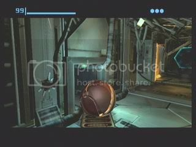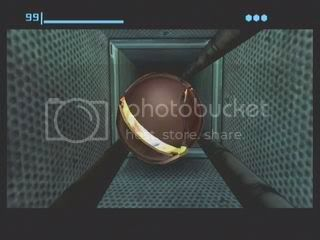 |
| 变形球：通过一些狭窄区域，以及使用球炸弹 |
变成球后进入小通道，出来后可以看到一个全息装置，走过去即可获得本飞行船的地图，按Z键即可查看地图以及了解一些重要位置的所在地，假如你是路痴的话就经常查看地图吧。。本区域扫描记录：[Research] Map Station，就是这个地图装置，注意如果全部区域的地图都取得以后，就无法收集这个扫描记录了，所以尽早扫描是正经。
| 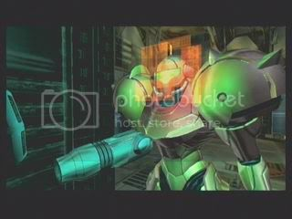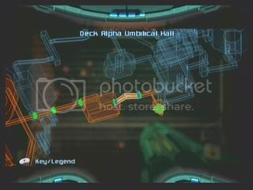 |
| 地图：查看地图可以知道已去过和未去过的冒险区域，还可以获得目的地提示 |
返回后继续前进到Connection Elevator to Deck Beta，扫描这里的开关后可以乘电梯来到上层。
在Deck Beta Conduit Hall中，需要变成球状态通过漏电装置和狭窄的通道。
接着来到Biotech Research Area 1，这里有一些残存的太空海盗，全部消灭它们吧。消灭它们后可能会出现战利品紫色回复小球，可以回复Samus的10Energy，这个东西是可以扫描记录的：[Research] Small Energy。
通过前方门进入Deck Beta Security Hall，这里出现新的敌人：挂在天花板上的机枪[Creatures] Auto Defence Turret，用Y键发身导弹可以一发消灭。消灭后有可能会得到战利品导弹补给：[Research] Missile Ammunition，用蓄力攻击吸过来可以补充5颗导弹弹药。
前进到Biohazard Containment，这里的电脑上可以扫描到海盗记录：[Pirate Data] Fall of Zebes，仅此一次不要错过。提示一下，以后的海盗记录都是在电脑上取得的。扫描前方的开关，乘电梯来到上层，灭掉海盗进门。
来到滑行电梯区域Cargo Freight Lift to Deck Gamma，扫描开关进入电梯到下层。扫描下方的开关，大门前会出现球型全息装置，变成球滚上装置，大门就会打开。
来到Recator Core Entrance，消灭掉2挺机枪后，先进左方有3个红灯的门，里面是可记录游戏进度的地方：[Research] Save Station。走上前去即可记录目前为止的游戏进度，在地图上是用“S”来表示的，如果觉得旅途很凶险，就多多记录吧。
| 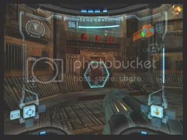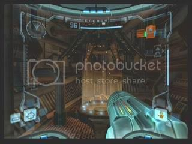 |
| 记录游戏进度：保存游戏的同时也会恢复Samus的全部体力 |
保存记录后回来，扫描装置打开新的球型全息装置，变成球启动它打开大门，前方的Recator Core，第一场练手型的Boss战即将开始。
| ☆Boss战：Parasite Queen | | 难度：★☆☆☆☆ | | 推荐武器：导弹/光弹枪攻击 |
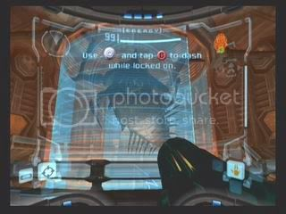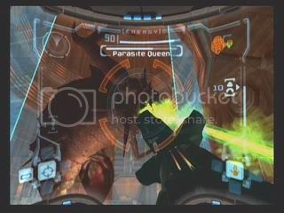
第一场BOSS战是非常简单的，主要是掌握一下战斗的基本技巧。首先要按L键锁定敌人，然后就可以配合左摇杆边移动边攻击了。想躲避敌人的攻击，就在锁定移动时按B键，即可快速的跳跃闪开敌人的攻击。这是最基本要点，从这里就开始掌握吧。
BOSS乃是寄生皇后大肉虫……在一个圆柱型区域内活动，它的攻击方式很简单，就是喷射绿色的毒液，在它起喷的时候按B键快速躲闪。BOSS的体力会在荧幕中间有显示。
BOSS被兰色护罩包围，要找到缺口进行攻击，这里也可以利用锁定移动+B键快速跳到缺口前。导弹攻击最有效，可以损失它不少体力。然后再换普通的光弹枪将其一举消灭即可。另外在消灭它之前千万不要忘记扫描记录这个只有1次机会的BOSS：[Creatures] Parasite Queen。
|
|
消灭BOSS之后，警报响起，飞船即将坠毁，Samus有7分钟时间逃离。时间还是比较充足的，赶快跑吧，逃跑路线很明显，中途有一些开关需要扫描才能打开通路，残余敌人的攻击可以无视。中期会进入管道，变成球状态速度更快些。在管道尽头有一个冲击柱装置，等柱子退回去就会看到出口。机械恶龙Ridley会突然出现破坏通路，这是需要使用光电索跳过去，使用方法是上方钩子的图示变成兰色时按住L键荡起，看到下一个钩子图示变兰色时先松开L键，再按住L键跳过，最后松开L键即可着陆。
走过管型通道后，Samus遭遇史上最可怕爆炸，鼎鼎大名的银河女战士居然全身装备都被损坏了，只剩下无法蓄力的光弹枪可用。没时间想那么多，赶快走吧，时间所剩无几。终于回到出口后，Samus在爆炸前一瞬间乘坐自己的小飞船直追Ridley而去。
| 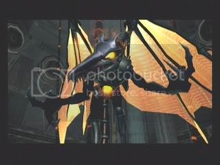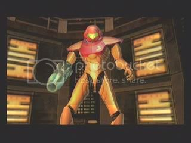 |
| 夙敌：Samus Vs Ridley |
Tracking on enemy target has been lost.
Ground-based recon required.
Begin landing sequence.
好吧，其实这时候游戏才正式开始。Samus降落在Tallon IV星球的Landing Site上，这是一个充满野生气息的世界，但由于污染，很多物种都变异了。这里是一个重要的枢纽，有很多通路。先别着急，回头扫描自己的飞船：[Research] Gunship做个记录。跳到飞船舱门上可以完全回复Samus的体力和弹药，所以要充分利用它。现在摆在眼前的路虽多，但可以走的只有眼前一条。
| 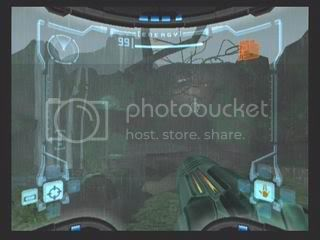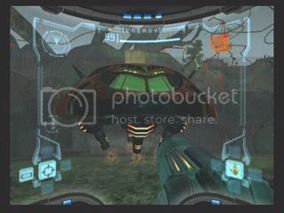 |
| 广阔的冒险世界，以及Samus的补给飞船 |
穿过门进入Canyon Cavern，前面的沙地上会钻出新怪物：[Creatures] Beetle，用普通武器光弹枪可轻易消灭。
后面是Tallon Canyon，墙上挂着的橙色圆形植物：[Creatures] Sap Sac不会主动攻击，相反打掉它倒会成为炸弹协助Samus炸伤周边的怪物。前方高台上移动着的带刺的灰白色怪物：[Creatures] Zoomer可用光弹枪消灭。一直从底层走向前方进门。
通过Transport Tunnel A来到Transport to Chozo Ruins West，扫描这里的开关就会启动电梯，乘电梯即可来到另一个世界，鸟人族的遗迹Chozo Ruins。这种电梯是在各个世界中来回移动的装置，在地图上会用E来表示。
出门，在Ruins Entrance里消灭沙地中的怪物，在前方的门上会看到奇怪的好象水波纹的图案，那是另一种扫描记录收集：[Chozo Lore] Fountain，里面记载着鸟人族的文化和历史，以后遇到就统统的扫描吧，也许可以了解不少背景知识呢。
来到一个重要的枢纽地带Main Plaza，左前方可以看到一扇红灰色的门：[Research] Missile Door Lock，只能用导弹才能打开，但现在导弹武器不见了，先扫描记录吧，全部打开以后这个记录就无法收集了。走到尽头进入左下方的门。
在通道Nursery Access中会看到一堆小虫子：[Creatures] Scarab，踩上去的话会把Samus的面罩都溅上绿色黏液，好噁心啊。
下一个通道Eyon Tunnel里的墙上有一些发射光线的眼睛怪物：[Creatures] Eyon，它不能被锁定，手动瞄准可以让它眼睛暂时闭上一段时间。
接下来进入Ruined Nursery区域，对面的墙上就是新的鸟人文字：[Chozo Lore] Exodus。顺边上的台阶来到上层时，貌似蚊子一样的生物：[Creatures] War Wasp成群袭来，他们会自杀式冲刺攻击，在它们飞过来前干掉它们。另外，这里高墙上挂着的蚊子窝：[Creatures] War Wasp Hive也是可以扫描记录的。提示系统这时还会开始工作，告诉你记忆点就在旁边，先进记录室记录游戏进度吧。
回来进左侧门，从North Atrium来到Ruined Gallery，地上那些活动的白色草植物：[Creatures] Tangle Weed走在上面时会暂缓Samus的行动速度，用光弹枪射击可以让它们暂时缩回去。这里的水域你应该注意到了，都是有毒的，掉下去会不断减少体力。水面平台上的爆炸蘑菇：[Creatures] Blastcap干掉它们时会释放出毒气，也要小心。这里先走上层平台，进前方的门。
在Totem Access出现新的物种萤火虫：[Creatures] Plazmite，它们可以作为照明使用，不爽的话就将它干掉吧。
接下来路面开始变得倾斜，颇有遗迹的味道。进入Hive Totem后，终于看到Samus遗失的导弹了，可是刚一上前，桥面就伸缩回去，四周开始喷洒毒水，BOSS战即将开始。
| ☆Boss战：Hive Mecha | | 难度：★★☆☆☆ | | 推荐武器：光弹枪攻击 |
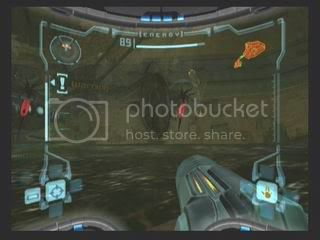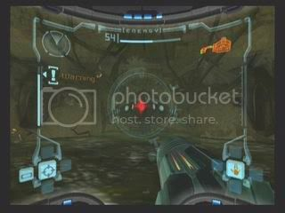
战场比较恐怖，四周都是毒液，掉下去就会不断减少体力，只有中央平台是安全的，尽量站在中央以免被敌人撞下去。BOSS是一台机械装置，共有3个开关，它会放出一群红尾巴的蚊子不断围绕Samus旋转，并借机会冲刺攻击。这次需要听声辩位元元了，只要蚊子一声尖哼，就是要冲刺了，跳一下即可躲过。
首先要消灭所有的蚊子，在它们旋转的时候是无法锁定，看准它们的路线射击就有可能命中，当它们停止时，就是冲刺的前兆，也是最好的攻击机会，赶快锁定消灭吧。消灭全部蚊子以后，BOSS就会露出红色灯光的破绽，锁定它将其打爆。打爆后BOSS还会重复放出2次蚊子，并且数量越来越多，按此方式将BOSS的三个开关全部打爆后即可取得胜利。
战斗结束之前不要忘记扫描记录，BOSS的身影在导弹装置的水面下：[Creatures] Hive Mecha，而四处飞舞的蚊子也是新物种：[Creatures] Ram War Wasp。
|
|
胜利后桥梁打开，在尽头取得重要装备导弹 Missile Launcher。正好前面就有一扇红灰色门，来发一枚导弹将其打开吧。
| 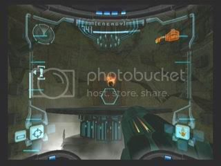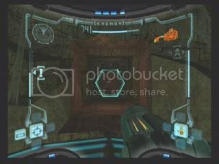 |
| 获得装备： | 导弹 Missile Launcher |
| 使用方法： | 按Y键发射 |
| 功能： | 锁定发射导弹可以追踪敌人，威力更强大，可以打开灰色的导弹门 |
进入Transport Access North，哇，中奖！眼前就是一个珍贵的能量槽 Energy Tank，每得到一个可以提升Samus的100格体力，后期尽量收集吧。
| 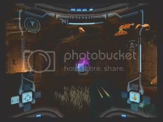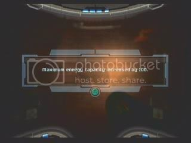 |
| 获得物品： | 能量槽 Energy Tank |
| 功能： | 提升Samus的100格体力 |
前方的路暂时无法通行，只好沿原路返回，回到Ruined Gallery，那个毒蘑菇旁边可以看到一堵碎墙，用导弹击碎，里面隐藏着一个导弹槽 Missile Expansion，每获得一个可以提升Samus的5颗导弹数量，当然也是要尽量收集的要素之一。另外在这里告诉你一个收集的小秘密，每当靠近有隐藏装备的区域时，就可以听见类似回声的音效，如果听到这种声音你就要好好看看周边有什么古怪了。
| 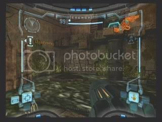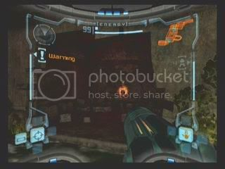 |
| 获得物品： | 导弹槽 Missile Expansion |
| 功能： | 提升Samus的5颗导弹数量 |
这个区域还有一扇导弹门，进入后可以取得Chozo Ruins的地图。
再返回到Save Station记录一下游戏，继续返回到枢纽地带Main Plaza，还记得那里有一扇导弹门吗？那里就是下一个目标。
穿过弯曲的通道Ruined Shrine Access，来到Ruined Shrine。看到远处的宝贝了吧？刚刚跳下平台，BOSS就来袭了。
| ☆Boss战：Plated Beetle | | 难度：★★☆☆☆ | | 推荐武器：导弹/光弹枪攻击 |
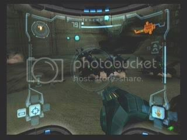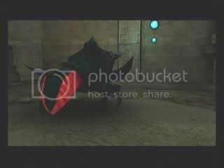
首先登场的是一群以前碰到过的土行孙，只是数量很多，一个一个锁定干掉吧，用导弹攻击可以群灭。消灭他们有可能会得到紫色回复球，体力渐低的话一定要得到。全部消灭后，正牌BOSS登场，是一只长着厚甲壳的土行孙。它的攻击方式很简单，就是挑衅加冲刺，锁定B跳可闪开。它的弱点在红PP上，需要用锁定B跳尽快跳到它身后去，用导弹当然是威力十足，用光弹枪的话就会稍稍浪费些时间，不过并不难干掉它。
战斗结束之前不要忘记扫描记录，BOSS土行孙的真正面貌是：[Creatures] Plated Beetle
|
|
胜利后取得重要装备变形球 Morph Ball，想从这里返回，就需要按X键变成球，然后从球洞里滚回去了。
| 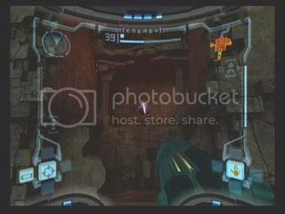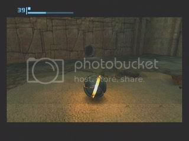 |
| 获得装备： | 变形球 Morph Ball |
| 使用方法： | 按X键变换，用左摇杆移动 |
| 功能： | 变成球型移动，可以通过狭窄通道 |
然后又要一路返回Main Plaza……，这里跳上高台过桥，进门。
Ruined Fountain Access要靠变成球一路滚过去。
来到Ruined Fountain，在喷泉后面是一个鸟人族文化遗产：[Chozo Lore] Hatchling。小心毒水，走左侧门。
在Arboretum Access中有一群悬挂着的自杀蝙蝠：[Creatures] Shriedbat。离他们比较近的时候他们就会冲过来自杀式攻击，所以最好远远的消灭掉他们，打开导弹门进入。
来到Arboretum，这里中央是一棵大树，小心毒水以及伸缩的植物怪：[Creatures] Reaper Vine，锁定后射击颈部它就会暂时缩回去，跳过平台，上木桥，然后进入导弹门。
Gathering Hall Access是一个铺设蒸汽管道的狭窄通道，变球滚过去即可。
来到另一个枢纽Gathering Hall，先进入导弹门，这里是记忆点，可以记录游戏了。然后一直进入对面的门。
Watery Hall Access的中央左面石墙可以用导弹打碎，里面可以得到一个导弹槽 Missile Expansion。然后继续前进入导弹门。
最终来到Watery Hall，石台上层是一扇封印门，需要在这个区域中找到4个封印，一一扫描以后就可以解除封印门的机关。4个封印的位置如下：
| 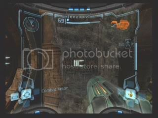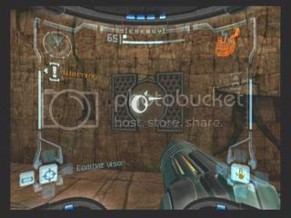 |
| 封印门的右边墙上 | 封印门的正下方墙上 |
| 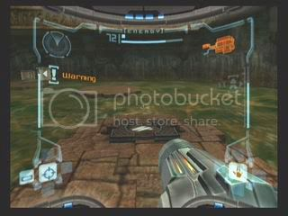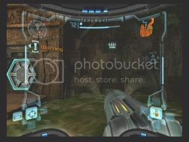 |
| 一群毒气蘑菇所在的地上 | 入口门的旁边墙上 |
然后跳上高台扫描封印门，门打开了，里面的墙上可以扫描到：[Chozo Lore] Meteor Strike。当然，最重要的装备是里面的蓄力枪 Charge Beam。从这时起就可以按住A键发射蓄力攻击了，墙上的几只大眼珠可以用蓄力攻击消灭。
| 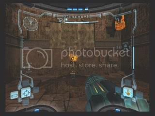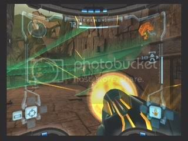 |
| 获得装备： | 蓄力枪 Charge Beam |
| 使用方法： | 按住A键蓄力攻击 |
| 功能： | 威力比普通武器更强大，可以消灭特定敌人，还可以把周围的补给品吸过来 |
使命暂时完成，可以返回Gathering Hall了。这时顺台阶一直跳到上层去，小心蝙蝠和毒蘑菇。到尽头需要变成球滚过通道，然后跳过平台进高处的门。
通过East Atrium和Energy Core Access，躲过眼球怪的扫射。
接着会来到一个非常复杂的区域Energy Core，小心不要掉到水里面去，看到对面的上锁门了吗？扫描可收集[Research] Locked Door。顺便一说玩到这里你应该已经发现红色补给球：[Research] Large Energy了吧？接下来先走左方通道，到尽头是球通道，进入。
一直呈球状态通过Burn Dome Access，你会发现已经没有退路了。前方的Burn Dome就是BOSS战的区域了。
| ☆Boss战：Incinerator Drone | | 难度：★★☆☆☆ | | 推荐武器：导弹/光弹枪攻击 |
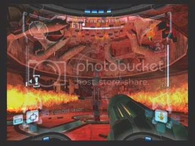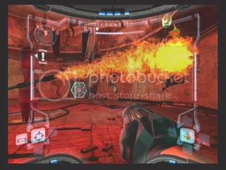
BOSS是一只火焰喷射器，一边旋转一边用2个喷口喷出火焰，根据火焰的高低可以跳跃或闪避躲开。它的弱点在间歇冒出来的红灯的头部，一旦出现后最好立刻锁定用导弹干掉。这是BOSS会将火焰向上喷射，上方是虫子巢，着火后大量的绿色飞虫飞来袭击Samus，可干掉也可无视，只要连续3次把火焰喷射器的头部打爆，这场战斗就胜利结束了。
战斗结束之前不要忘记扫描记录，火焰喷射器是：[Creatures] Incinerator Drone，而绿色的飞虫是：[Creatures] Barbed War Wasp
|
|
胜利后取得重要装备：球炸弹 Morph Ball Bomb。球炸弹可以炸开部分障碍以及使用炸弹跳技巧。
| 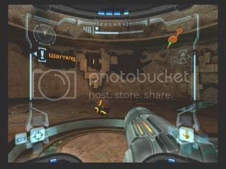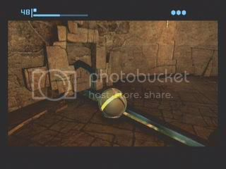 |
| 获得装备： | 球炸弹 Morph Ball Bomb |
| 使用方法： | 变成球后按A键放置炸弹，最多可连续放3个炸弹 |
| 功能： | 放置炸弹可以让变形球实现炸弹跳，炸弹可以炸碎一些岩石，也可以启动爆破装置 |
先别着急走，在这里的墙壁处就有一处挡板可用球炸弹炸开，进入通道尽头可以找到一个导弹包 Missile Expansion。然后可以返回了。通过Burn Dome Access时要使用炸弹跳跳到上一层，方法就是放置炸弹，在爆炸的时候用左摇杆操作球的移动了。
回到Energy Core就会看到一只挡路的大青蛙：[Creatures] Stone Toad，对付它的方法是变成球让它吞掉，然后立刻放置炸弹即可解决它，好残忍哪……进入后会看到墙上的爆破装置：[Research] Morph Ball Slot。使用炸弹跳进入装置，再放置一颗炸弹，装置启动，大厅的毒水全部排干了，并且响起警报声，要在警报结束之前进入下方的爆破装置。从这里的洞里跳下去是一条捷径。启动第2个爆破装置后，平台升起，同样要在限制时间内顺平台走过通道，到达第3个爆破装置并启动它，那扇上锁的门就打开了，本区域的全部机关解除。
进入那扇门，通过West Furnace Access，来到Furnace的一侧，这里只能用球通过，走到尽头可以得到一个能量槽 Energy Tank。然后就没啥好留恋的了，继续返回枢纽Gathering Hall去记录一下游戏进度吧。
下一步前往有一棵大树的区域Arboretum，需要爬上去进入顶层的封印门处，这里同样有4个封印，位置如下：
| 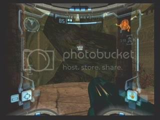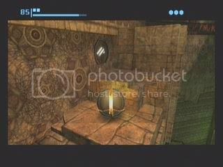 |
| 封印门对面的树枝上 | 高层一处墙上 |
| 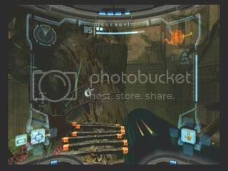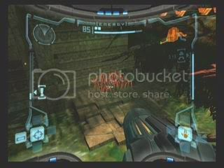 |
| 下方木桥正对着的树干上 | 一群红色毒草的下面 |
全部扫描后，封印门打开，用球炸弹炸开挡路的碎石，进入导弹门。
在Sunchamber Lobby的红色毒草是新物种：[Creatures] Venom Weed，踩上去会损失体力的。
在Sunchamber Access的尽头处有2个箱子，打碎它们可能会出现终极回复球：[Research] Ultra Energy，可以回复100格体力。在这里做好准备吧，进入Sunchamber以后就要迎接一场高级BOSS战了。
| ☆Boss战：Flaahgra | | 难度：★★★☆☆ | | 推荐武器：导弹/光弹枪攻击/球炸弹 |
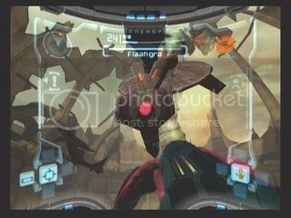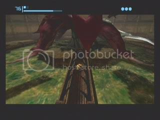
经历了那么多小BOSS的无聊战斗之后，终于迎来一只殿堂级BOSS，它就是造成遗迹水源污染的罪魁祸首。这个BOSS是有体力显示的，而且对付它的方法可不是一味的猛打，需要找到弱点的。BOSS的攻击方式比较多，用它的2把大刀乱砍，喷射毒液，以及放射出一堆有毒植物阻挡Samus的移动路线，注意躲闪吧。
战场上有4面巨大的反光镜，最开始时会有一面镜子将阳光反射在BOSS身上，这就是BOSS的生命源。所以攻击BOSS本体是不会损失它体力的，要攻击的就是镜子后面的红灯，用导弹或蓄力攻击可以一次将镜子翻过来，用普通攻击就要多打几枪。这时候BOSS会暂时昏厥，注意到它身边的通道里触手也缩回去了，而通道的尽头是一个爆破装置，赶快变成球进入通道尽头放一颗炸弹，熊熊火焰会烧掉BOSS的1/4体力。
这时BOSS又醒过来了，而且有2面镜子翻了过来给BOSS提供能量，接下来对付它的方法同样是将镜子再打回去。注意，镜子数量会越翻越多，在Samus攻击镜子的中途，而BOSS会把无效的镜子又翻过来，所以这时最好的方法就是锁定BOSS攻击，虽然不能减它的体力，但可以让它暂停行动。然后一边锁定攻击一边快速移动，利用攻击空隙把周边的反光镜都打回去。按如此方式，分别打翻2，3，4面反光镜，并引爆其余的几个爆破装置后，这个怪物就被彻底的消灭掉了。而鸟人遗迹的水源也恢复了正常，从此以后可以进入水域活动了。
战斗结束之前不要忘记扫描记录，BOSS是一只巨大的螳螂：[Creatures] Flaahgra，还有就是它的4只看守爆破装置的触手：[Creatures] Flaahgra Tentacle
|
|
胜利后取得重要装备：抗热铠甲 Varia Suit。这身铠甲会自动替换掉Samus以前的铠甲，它拥有更高的防御力，而且可以进入温度较高的地带。
|
| 获得装备： | 抗热铠甲 Varia Suit |
| 使用方法： | 自动装备 |
| 功能： | 它拥有更高的防御力，而且可以进入温度较高的地带 |
然后顺另一扇门离开这里，来到Sun Tower Access，有一段路在已经清洁的水下，你会感到在水下移动比较吃力。上岸后会碰到一只电力系生物：[Creatures] Pulse Bombu漂浮在空中放炸弹，目前还对付不了它。
从Sun Tower的顶层一直落下（好高啊……），旁边的墙上可以扫描到：[Chozo Lore] Contain。然后离开这个鬼地方。
前面来到Transport to Magmoor Caverns North，这里的电梯就可以前往熔岩世界了，不过先不要着急，进左边的门搜刮一下附近的宝物再走不迟。
Vault Access要靠球形态通过。
来到Vault，墙上可以扫描到[Chozo Lore] Beginnings，而大厅中央是一个封闭区域，需要启动对面的3个爆破装置才可以打开。这里就需要双炸弹跳技巧了，将3个装置全部启动后，从中央可以取得一个导弹槽 Missile Expansion。
继续前进，通过Plaza Access来到Plaza的上层取得一个能量槽 Energy Tank，不要掉下去，然后即可返回Transport to Magmoor Caverns North启动电梯前往Magmoor Caverns了。
来到熔岩世界，进入Burning Trail区域，又是一个自由落体运动到下层，这里喷出的热气会干扰Samus的视线，变成球状态可以避免。进入导弹门，里面是记忆点，稍做休息吧。休息后继续前进，遇到小个头的硬壳怪物：[Creatures] Grizby，只有导弹可以消灭掉，当然也可以无视它。
来到Lake Tunnel区域，地面上开始出现大片的熔岩，掉下去是会损失体力的。这里有一种钻地的怪物：[Creatures] Burrower，只有当它飞出地面时攻击才有效。
接下来会来到广阔的Lava Lake区域，迎接Samus的是一只从熔岩里窜出来的火龙：[Creatures] Magmoor，会没完没了的喷火，只要躲在它的射程之外锁定它的脑袋攻击就可以了。而另一种在空中飞行的怪物：[Creatures] Puffer，在消灭它之后它会放出绿色毒气一段时间，所以要注意躲着点。跳过熔岩湖到达中央地带时貌似无路，实际上在那几个箱子后的墙壁是可以用球炸弹炸碎的，即可到达熔岩湖的另一侧。
在Pit Tunnel中，前方的路被铁栅栏堵住了，需要以球状态从地板下通过，在地板下有移动的怪物：[Creatures] Triclops，如果被它捉到，就会被弹回入口，躲着点或者用球炸弹解决它。
来到Triclops Pit区域，先找到左首一个黑暗处隐藏着的山洞，那里有一个球通道可以通向地板下，同样有一群钳子怪在里面捉球，一路躲开并到达另一个出口，进门，来到Storage Cavern，在尽头可以取得一个导弹槽 Missile Expansion。然后返回Triclops Pit，顺着活动平台跳到最高处，注意那些圆形的平台一旦踩上去，是会不断下落的，所以要连续的跳过去。
通过Monitor Tunnel的几个活动平台，来到重要枢纽Monitor Station，先把那一群烦人的机枪解决掉。然后前进的方向是跳到中央平台的上层，那里有一座长桥，通过，进门。
进入球通道Transport Tunnel A，顶层可是隐藏着收集品啊。在最右方的小铁箱上使用双炸弹跳到达上一层，左移后在下一个铁箱处再次双炸弹跳到达更高层，在最左上方的铁箱处使用最后一个双炸弹跳，即可在最高处取得能量槽 Energy Tank。这里的小铁箱用2枚球炸弹就会彻底炸碎，所以连续3次不能失误的双炸弹跳对操作要求还是比较高的，你现在有把握取得吗？不管结果如何，最后也要从最底层通过这里。
前方就是Transport to Phendrana Drifts North，通往冰雪世界的电梯了。
来到冰雪世界Phendrana Drifts，这温差变化太强烈了，刚刚还是热炎滚滚，一转眼就冰雪皑皑了……
在Shoreline Entrance中会有冰层阻挡通路，只要用蓄力攻击就可以打碎。
来到了冰雪世界的重要枢纽区域Phendrana Shorelines，漫天飞雪的景象让人过目难忘。正对面隐藏着的洞穴里就是记忆点的房间。在这里爬行的冰状怪物：[Creatures] Crystallite用导弹可以消灭。而空中飞行的一种隐型的鸟怪：[Creatures] Flickerbat暂时还没有好办法对付它。
初到这里可能会很彷徨，敢问路在何方？其实就在栅栏后，有一处貌似封闭的栅栏是可以用导弹击碎的，然后变成球进入里面扫描开关，就可以打开上层关闭的门。从远处的平台上跳过去即可进入此门。
在Ice Ruins Access通道中，又出现一种新的电磁型敌人：[Creatures] Scatter Bombu，发出3道光束并不断移动，在很接近它时，Samus的视线会被严重干扰。目前暂时消灭不了它，还是变成球躲过它吧。
来到Ice Ruins East，2只可怕的雪怪出现！在离远时它们会吐冰晶，被命中的话Samus会被冻住，这时要连按B键解冻，离近处的话它们会冲撞，威力还真不小啊。它们的弱点在PP上，快速移动到它们身后，3颗导弹可以解决一只，其他的攻击几乎全部无效。仔细一看，这怪物名叫[Creatures] Baby Sheegoth，靠啊，这么大个头还叫Baby，不知道它们的爹妈会是什么鬼样……。消灭它们之后，寻找上房的路，从房顶一层层跳过，进入另一扇门。
Plaza Walkway里全是那些埋在地下的虫子怪：[Creatures] Ice Burrower，一定要扫描，但它们比较难缠，就快速离开好了。出门会发现回到了Phendrana Shorelines的上层，不要掉下去，顺着路走到另一扇门。
这里是Ruins Entryway，又是一堆放炸弹的电磁怪，躲过。
来到Ice Ruins West，在右首的小房间里的墙上有[Chozo Lore] Cipher，然后再直奔角落里那扇导弹门。
通过通道后来到冰雪世界的大峡谷Phendrana Canyon，在独木桥的里面墙上隐藏着[Chozo Lore] The Turned。而来这里的目的更为重要，在不远处可以发现扫描装置，扫描后，连续的活动平台出现，一级一级跳过去，在尽头取得重要装备：冲击球 Boost Ball。一路长途跋涉这么远，就是为了它呀。
|
| 获得装备： | 冲击球 Boost Ball |
| 使用方法： | 球状态时按住B键蓄力，再松开B键让球快速冲出 |
| 功能： | 可以快速移动，可以冲上U型台，也可以启动冲击装置 |
你会发现想离开这个大峡谷，就需要使用冲击球了。峡谷就是一个U型台的形状，先用冲击球冲向一方，在落下时按住B键，球落到最低点时松开B键，冲击球会冲向另一方台的更高处，如此反复就可以越冲越高，直到落在上层平台，然后即可离开这里。
一直返回Shoreline Entrance，突然看到翼龙Ridley巨大的身影一闪而过！……还好，不是BOSS战。记录一下游戏继续返回吧，下一个目的地在飞船降落点附近，离这里还远着呢。
先乘电梯回到Magmoor Caverns，穿过Transport Tunnel A，回到枢纽区域Monitor Station。为了避免旅途枯燥，这次走一条新路线返回。进入下方一扇未曾去过的门。
Shore Tunnel这里有一个玻璃通道，穿过去，对面有间歇的喷火装置。
来到Fiery Shores，到处都是熔岩，灭掉火龙，变成球炸弹跳到球通道中通过，落地时有2个箱子，炸掉，顺着熔岩边通道可以来到上层，很狭窄的通道，球操作要小心一点不要掉下去，到通道尽头可以取得一个导弹槽 Missile Expansion。然后离开这里继续前进。
在Transport Tunnel B中，可以无视火龙，变成球从球通道中快速通过熔岩地带。
终于来到Transport to Tallon Overworld West，启动这里的电梯，就可以返回Tallon Overworld了。
出电梯，进门来到Transport Tunnel B，看到一座浓烟滚滚的石桥，烟是无害的，在桥底下可以取得一个导弹槽 Missile Expansion。
接着来到Root Cave，顺着树干和滴水的石台爬上去，这里可以看到红色的刺猬状怪物：[Creatures] Geemer，目前的武器暂时无法对付。跳到中层平台上进入导弹门。
前方是Root Tunnel，里面有一种植物怪：[Creatures] Bloodflower，会喷绿色的毒液球，只有在他张嘴的时候攻击才是有效的，最简单方法是将它附近的爆炸植物打掉炸飞它。
穿过去就是目的地Tallon Canyon，看到底层的U型台了吧，使用冲击球冲到上层，走过碎石桥，前方长方形通道的障碍物可用球炸弹解决掉，钻进去穿过Gully区域。
结果居然回到了飞船降落地Landing Site的高层平台上，不要掉下去啊，沿着悬崖边走跳过2处缝隙进门。
进入Alcove，在这里得到重要装备：太空靴 Space Jump Boots，它的重要功能是双级跳，从此就可以跳跃上更高的平台了。想离开这里就需要一个简单的双级跳，先来演练一下吧。
|
| 获得装备： | 太空靴 Space Jump Boots |
| 使用方法： | 按B键跳起后再按B键即可继续跳跃 |
| 功能： | 双级跳可以跳上更高的平台 |
回到Landing Site，在飞船后面的悬崖内部隐藏着球通道，周边被草包围着，里面可以取得一个导弹槽 Missile Expansion。另外，既然可以高跳了，那么就前往瀑布旁边的高台，看看那扇门后面隐藏着什么吧。
来到Temple Hall，这里的天花板上出现新物种：[Creatures] Seeding，会飞射出很多针状物体，赶快消灭它们是正经。
穿过去来到Temple Security Station，从这里可知这里是Tallon IV星球被碰撞过的陨石坑入口，很壮观的地方啊。中央那个旋转摄影扫描后得到：[Pirate Data] Artifact Site。
通过Temple Lobby走廊，来到Artifact Temple，在这里的2面墙上可以扫描到：[Chozo Lore] Statuary和[Chozo Lore] Binding。继续下行，来到神器广场，在广场中央得到重要物品：第一神器 Artifact of Truth。
|
| 获得物品： | 第一神器 Artifact of Truth |
| 功能： | 打开通向陨石坑的十二神器之一 |
从这里可以知道，神器 Artifact是一种奇特的收集品，必须要集齐12个神器才可以打开这里的最终通道，而神器被隐藏在Tallon IV星球的各个角落中，在这里扫描立柱，可以得到其他神器的隐藏地点的情报。神器同时也是一种比较特殊的扫描收集，只要全部获得了12神器以后就相当于全部扫描了。居然还有11只神器的下落不明，只有在漫漫旅途中仔细寻找了。
接下来需要前往冰雪世界继续冒险，你还记得回去的路吗？路还真是挺长的……先从这里返回Landing Site，回飞船补给一下，然后前往Tallon Canyon，顺上层平台前往Root Cave，落到最底层进门乘电梯返回Magmoor Caverns。因为有了双级跳，所以路途会减少很多，大胆的跳吧，肯定比你想像的跳的远。
下电梯后继续走原路，回到Monitor Station，这里会有点小收获。走到长桥上，会看到左方有一个小平台，跳上去再跳到上层长桥，到中央平台，看到一个象帽子一样的装置：[Research] Spinner，这个是冲击装置，变成球进入后用冲击球的方法即可操作它，3次冲击以后旁边会升起一座新的桥梁，走过去跳到对面悬崖，顺着边上走到尽头进门。
来到Warrior Shrine中，从巨大的雕像手中取得重要物品：第二神器 Artifact of Strength。
|
| 获得物品： | 第二神器 Artifact of Strength |
| 功能： | 打开通向陨石坑的十二神器之一 |
返回Monitor Station，穿过Transport Tunnel A乘电梯前往冰雪世界。
来到Shoreline Entrance，先去记录一下游戏。然后，看到空中漂浮的平台了吧？因为有了双级跳的能力，所以可以从悬崖边的高台上跳到空中平台上去了，然后再一个超远端双级跳跳到对面神殿前的空中平台上，到达对岸，进门。
穿过Temple Entryway，躲过那些电磁怪物。
来到Chozo Ice Temple，这里需要一级一级跳到上层去，有一些在平台上爬的生物是新物种：[Creatures] Ice Parasite，为了防止跳跃中被扳脚，还是先把这些怪物都灭掉吧。来到上层，尽头处有一个手中结冰的鸟人雕像……先别理它，通路在右边，那里的门被铁栅栏锁住了，扫描之后会得到需要找到shaman才能解开它的情报。其实就在上层大厅的墙壁处有一个图腾是可以用导弹轰掉的，里面隐藏着爆破装置，启动后栅栏门就会打开了。
在球通道Chapel Tunnel中，需要用炸弹将2棵挡路的石柱拦腰炸掉即可通过。前方来到目的地Chapel Tunnel，BOSS战即将开始。
| ☆Boss战：Sheegoth | | 难度：★★☆☆☆ | | 推荐武器：导弹/球炸弹 |
看到前面有个宝物，走过去发现原来是个圈套，4只Baby Sheegoth出现。好久都没有BOSS战了，来体验一下紧张感吧。这4只怪物已经知道如何对付了，绕到它们身后去放导弹，3颗解决一只即可。
当然没这么简单，baby们全部挂掉之后，它们的长辈终于破墙而出了。巨大的雪怪，后背上长满了钻石般的尖刺，它的冲撞和吐息都是非常厉害的，要小心点，另外被冻住的时候不要忘记连按B键解冻。
光弹枪和导弹对它的攻击都是无效的，它背上的防御能将一切攻击化解，那怎么办呢？自然是变成球，用球炸弹去炸它的肚子和腿了，注意保持体力不要损失过于严重，然后就找机会滚到它身下放炸弹吧，若干回合后就可以消灭它。
战斗结束之前不要忘记扫描记录，冰雪宝贝们的家长名叫：[Creatures] Sheegoth
|
|
胜利后取得重要装备：电磁枪 Wave Beam。按C键右可以切换，这把枪就是用来消灭那些电力系生物的，同时也可以打开紫色门，这样就可以前往更多的区域了。
|
| 获得装备： | 电磁枪 Wave Beam |
| 使用方法： | 按C键右切换，按住A可蓄力攻击 |
| 功能： | 消灭电力系生物，蓄力攻击可让敌人麻痹，打开紫色门，启动隐藏的电力开关 |
从这里返回，紫色门需要用电磁枪打开。路上会碰到不少以前束手无策的电力系生物，现在都可以用电磁枪轻松干掉。注意在电磁枪蓄力攻击时会把那种漂浮在空中的怪物吸过来的，不要撞上它。
回到Shoreline Entrance记录一下游戏，然后需要走上层平台通往峡谷的路，现在有了双级跳可以轻松到达，进门通过Ruins Entryway。
来到Ice Ruins West，这里有一扇紫色门就是下一步的目标，先干掉2只小雪怪，然后从右方跳上房顶找新的路，然后，不要忘记扫描挂在天花板上的自杀型怪物：[Creatures] Ice Shriekbat！（大哭，这次攻略忘记扫描它了……），最后会看到一块挂在顶上的倒圆锥状巨石：[Research] Stalactice，它的数量有限，先扫描一下留念吧。然后锁定它用导弹攻击，巨石就会落下成为垫脚石。从石块上可以到达对面上层，再跳几跳就来到紫色门处了。
穿过Countyard Enterway。
来到广阔的区域Ruined Countyard，需要先用冲击球启动底层的2个冲击装置，然后跳过平台来到中层，启动爆破装置，这里的巨大水池开始蓄水，时间有限，超时了以后水就会排干。要在有限时间内顺着水面浮冰跳倒中央的中层平台去，看到对面那个球通道了吗？趁着时间未结束，赶快跳过去，进入通道到下层秘室可以取得一个能量槽 Energy Tank。然后再返回启动爆破装置，这次跳到中层平台以后顺悬崖边的平台就可以跳到上层平台去。
目前可以看到3条路，先进入导弹门内，那里是记忆点。注意这里的跳跃间隔比较远，充分掌握双级跳最好不要掉下去，然后回来向紫色门处进发。
在Specimen Storage中遇到隐型海盗：[Creatures] Shadow Pirate，离远处它会射击，离近处它会用大刀砍。这里可以充分利用电磁枪蓄力攻击的特性了，命中它以后它会暂时麻痹，然后一颗导弹即可消灭它。
进入Research Entrance后，来到海盗基地，报警装置发现了Samus，一场小型战斗开始，大量的太空海盗：[Creatures] Space Pirate出现。相比来说这些海盗还是比较容易对付的，善用电磁枪蓄力攻击解决它们吧。
从底层右侧的门进入Map Station可以取得Phendrana Drifts的地图。然后返回 走到上层进入紫色门继续前进。
穿过Hydra Lab Entryway，来到Research Lab Hydra。扫描门口的装置打开兰色屏障，又一场与海盗的恶战开始。这里的电脑上有很多海盗记录，不要忘记扫描。一层可以扫描到：[Pirate Data] Phazon Analysis，[Pirate Data] Mining Status和[Pirate Data] Security Breaches，乘电梯来到3层，可以扫描到[Pirate Data] Glacial Wastes和[Pirate Data] Parasite Larva。（如果你的进度跟本文相同的话，那么现在已经收集到50%的扫描记录了，游戏会有提示……天，扫了这么半天才一半东西！……）在3层的房间顶部有紫色门，打开后跳跃来到下一区域。
在Observatory Access中消灭2挺机枪后通过。
进入Observatory，海盗群出现，全部干掉后，底层的机关可扫描。首先这里的电脑上可收集到：[Pirate Data] Contact，[Pirate Data] Phazon Program。这里的机关比较多，但并不复杂。扫描中央电脑后右边平台上的爆破装置可用，跳上去启动这个装置，又启动了左方平台上的爆破装置，再次启动后，大厅中央的四个冲击装置可用了。用冲击球分别启动这4个冲击装置，天文台上的全息摄影装置启动了，出现了本星系行星的运行效果。这里都是知识啊，收集吧：[Research] Zebes，[Research] Tallon IV。
收集活动过后，你会发现平台的数量也增多了，顺着平台可以跳到顶层去，在天文台最上方平台得到重要装备：超级导弹 Super Missile。
|
| 获得装备： | 超级导弹 Super Missile |
| 使用方法： | 在使用光弹枪武器时，先按住A键蓄力，然后按Y键发射超级导弹，每颗超级导弹需要损耗5颗导弹弹药 |
| 功能： | 威力强大，可击碎一些特殊障碍 |
可惜目前还发挥不出它的功效，先进入上层导弹门，记忆点，游戏记录。
进入上层的另一扇门，通过West Tower Entrance，进入导弹门。
在West Tower中扫描开关，乘电梯到达上层。
在Control Tower中，小型战开始，消灭了一群太空海盗后，新的敌人飞行海盗：[Creatures] Flying Pirate出现，他们会在空中连发追踪导弹和机枪射击，在消灭后还会向Samus做自杀式的坠毁攻击，稍加躲闪吧。全灭后，封闭的门打开了，继续前进。
进入East Tower，乘电梯到下层，穿过Aether Lab Entryway。
来到资源丰富的Research Lab Aether，首先Samus看到了试管中那阴魂不散的生物：[Creatures] Metroid，紧接着它会破管而出攻击Samus。这种怪物是会吸血的，一旦被它吸住了面罩就会不断损失体力而且眼前一片雪花，不要惊慌，赶快变成球，用球炸弹炸开它。然后最好离远一点攻击它吧。在上层电脑和电脑墙上可以扫描到：[Pirate Data] Metroid Studies，[Pirate Data] Meta Ridley。在下层可以扫描到：[Pirate Data] Metroid Morphology，[Pirate Data] Metroid Forces，[Pirate Data] Phazon Infusion。
还没有完，这里可是个宝库啊，在中层阶梯的尽头，可以看到上方有球通道，跳上去变成球滚到尽头即可得到一个导弹槽 Missile Expansion，这里的球通道没边缘很容易掉下去的。而在底层墙边的试管中可以看到收集品，用超级导弹炸开试管，可以取得里面的能量槽 Energy Tank。
现在收集完毕，可以离开这里了。炸开底层的一堆箱子，就可以看到紫色门，跳下进入。
在Research Core Access中遇到新物种：[Creatures] Ice Beetle，跟以前那个钻地虫的攻击方式相同。
最终来到Research Core，又是一场飞行海盗与机枪乱扫的大混战，在这个光线变化强烈的环境中，你可以看到Samus的眼睛倒影在荧幕上的华丽视觉效果。将敌人全灭掉，然后分别扫描这里面3层平台上的电脑保护装置，最底层的装置的保护罩就会全部解除。取得重要装备：感热视镜 Thermal Visor。用十字键下切换就可以看到平时看不到的敌人和装置了。
|
| 获得装备： | 感热视镜 Thermal Visor |
| 使用方法： | 按十字键下切换 |
| 功能： | 在黑暗环境中可以看清环境，发现隐藏的敌人和可以用电磁枪启动的电磁开关 |
想离开这里的时候会发现最上层的门电力消失了，切换为感热视镜，可以看到通道和阶梯了。周边的怪物Metroid会不断跳出来，小心攻击行事。来到顶层，会发现在门旁边有一个圆形开关，这个就是热能开关，用电磁枪即可启动它，门就可以打开了。后面类似的机关会很多，充分配合使用感热视镜与电磁枪吧。
回到Research Core Access会发现新的敌人：[Creatures] Sentry Drone。会机枪攻击和电磁干扰，他们还会封闭当前区域的门，只有全部消灭他们之后才可以解除。
然后就一路返回吧，有些昏暗的区域需要使用感热视镜，明亮的区域就不要用了。回到Research Entrance时，可以看到一个封闭型的试管，用超级导弹可以轰开，里面得到导弹槽 Missile Expansion。这里的敌人也比较多，善用感热视镜搜索攻击吧。
回到Ruined Countyard，记录一下游戏，上层有一扇没有去过的门。在门上的三角形装置可以用超级导弹轰掉，切换为感热视镜，可以看到里面隐藏着开关，用电磁枪启动，门打开了。
穿过Quarantine Access，再穿过球通道North Quarantine Tunnel，这里最好用冲击球快速躲过敌人的炸弹攻击。接着来到大战场Quarantine Cave，BOSS战开始。
| ☆Boss战：Thardus | | 难度：★★★☆☆ | | 推荐武器：感热视镜/超级导弹/光弹枪 |
又迎来一场殿堂级的豪华BOSS战，BOSS是一只受到Phazon物质辐射的石头巨人，形象威武之极啊。这场战斗要充分利用新入手的装备方能取得胜利。BOSS的攻击方式相当多，它的左手砸地会放出冰冻光线，如果没有及时躲闪的话就会被冻住，这时需要快速按B键解冻。它的双手举起时，会放出很多飞石向Samus飞来，击碎石头有可能获得能量补给。最可恶的一招是变成巨大圆石滚动攻击，很难躲开，而且这时无法锁定攻击它。在战斗中期，它会一边在身边放电一边产生巨大的暴风雪，只要躲远一点即可。
攻击方式也是很讲究的，首先，无法锁定BOSS，因为看不到它身上的弱点，切换成感热视镜，就会看到BOSS身上发出红光的能量源所在。立刻锁定攻击吧，等到击毁这个能量源的时候，荧幕会一片黄色光芒，这时需要切换回战斗视镜。BOSS身上的弱点就会呈兰色彻底暴露出来，用超级导弹攻击最有效，一发就可以干掉这个能量源，但因为BOSS的四肢不断的在移动，能够挡住导弹，所以导弹攻击一定在他露出破绽时快速使用，以免浪费弹药。
在破坏掉一个能量源之后，需要再次切换到感热视镜寻找BOSS身上的下一个能量源，然后按此方式干掉它的四肢，肩膀上的能量源，最后胸口上最后的能量源就会出现，最后的时间就利用一切武器无情的解决它即可。
战斗结束之前不要忘记扫描记录，石头巨人的真身是：[Creatures] Thardus
|
|
战斗胜利后，取得重要装备：蜘蛛球 Spider Ball。从此以后可以爬行磁轨了。
|
| 获得装备： | 蜘蛛球 Spider Ball |
| 使用方法： | 变成球状态时，按住R键可以沾在磁轨上爬行 |
| 功能： | 可以沿特殊的磁轨爬行，在磁轨上也可以放置炸弹进行炸弹跳 |
这个战场周边的黄色轨道就是磁轨：[Research] Magnetic Track。记住使用蜘蛛球的时候要牢牢的按住R键，然后按左摇杆移动，在这个区域里，先使用炸弹跳跳上一处未靠地的磁轨，到最高处时使用炸弹跳吸住上方的环行磁轨，然后向逆时针方向移动到另一扇门那里去。
穿过South Quarantine Tunnel的球通道，来到Transport to Magmoor Caverns South，记住这里的磁轨，将来要回来的。然后从这里乘电梯前往Magmoor Caverns。
终于离开了冰雪世界返回熔岩世界的Transport to Phendrana Drifts South，这里回身的导弹门后是记忆点，进入记录游戏。然后从前门返回，这一带以前还没有来过呢。
穿过有很躲喷活装置的Transport Tunnel C，这里变成球可以快速通过。
来到广阔的Magmoor Workstation，先来一场飞行海盗战把他们都消灭掉，然后落到底层会看到一座有蓝灯的圆柱型装置，切换为感热视镜，就会看到附近的3个门旁边各有一个开关，用电磁枪启动，圆柱装置就会启动。首先兰色门底下的熔岩消失，可以从地板下用球通过，中途的怪物最好提前炸掉。进入兰色门后的房间，扫描墙上的装置，计时机关启动，需要从地下通道快速到达另一扇门下方，扫描另一个门后墙上的装置，然后在限制时间内顺地下通道滚到最后一扇门内，即可获得一个能量槽 Energy Tank。然后，可以从跳上左方的平台离开这里了。
通过South Core Tunnel，这里出现漂浮在熔岩上的新物种：[Creatures] Puddle Spore。只要趁它张开贝壳时射击它，它就会翻个面成为落脚石。
来到Geothermal Core，用跟刚才同样的方法通过熔岩地带。
在North Core Tunnel中，可以用导弹击碎天花板上挂着的巨岩当平台通过。
来到Twin Fires，这里同样需要击落巨岩跳过熔岩地带，那些喷火装置变成球即可无伤通过。
在Twin Fires Tunnel里，可以从墙壁里的洞中爬上磁轨通过熔岩地带。
最后来到Transport to Tallon Overworld West，从这里乘电梯前往Tallon Overworld吧。然后，穿过Tallon Canyon，再从Transport to Chozo Ruins West的电梯前往Chozo Ruins。
首先，到达Main Plaza以后，用超级导弹轰掉这里的大树中央的枝干，然后从旁边的台阶上跳进去可以得到一个导弹槽 Missile Expansion。然后前方有个U型台看到了吧？用冲击球到达在右上方的缺口内可以得到一个导弹槽 Missile Expansion。然后，到上层，进门。
一直来到Ruined Fountain，变成球跳进喷泉里按住R键，喷泉会把球喷到上方磁轨上，顺磁轨爬行到尽头可以取得一个导弹槽 Missile Expansion。
继续前进到Gathering Hall，这里可以记录游戏了，跳到上层平台，在门前的红色装置上跳到上层，用球炸弹炸开障碍，里面可以得到一个导弹槽 Missile Expansion。然后进门继续前进。
来到Furnace，终于快到目的地了，从这里的磁轨爬上去进入球通道，那些会消失的碎石需要用冲击球冲过去，并且迅速在尽头用炸弹跳到上层通过，即可来到Furnace的另一侧。在高处磁轨上爬行的新物种：[Creatures] Plated Parasite，先不要理睬它们。左方的墙上可以找到：[Chozo Lore] Cradle，在它下面就是隐藏的球通道，进入。
穿过长长的通道来到Crossway Access West。
出来之后来到Crossway，这里有个U型台，很明显要用冲击球到达对面。对面的墙上可以扫描到3个文化记录：[Chozo Lore] Worm，[Chozo Lore] Hatchling's Shell和[Chozo Lore] Infestation。
在门边墙的装置可以用超级炸弹轰掉，扫描内藏的开关后，高处墙壁上就会出现磁轨，从U型台用冲击球冲上磁轨爬到头，用炸弹跳进入爆破装置并启动它，对面高墙上的新磁轨出现了，再次用冲击球冲上去，好高啊……真的能冲上去吗？当然了。启动第2个爆破装置后，墙边出现新的球通道，在限制时间内进入，从通道尽头可以取得一个导弹槽 Missile Expansion。然后顺旁边的导弹门可以离开这里了。
通过Elder Hall Access，来到Hall of the Elders，记住这里是一个非常重要的地方！一进门左首就可以看到球通道，进入后里面是导弹的补给装置：[Research] Missile Station。用这个装置可以补充全部的导弹数量，要充分利用啊。
回头跳下大厅，可怕的鸟人鬼魂：[Creatures] Chozo Ghost出现，它白光一团，移动飞快，时隐时现，会发射巨大的冲击波令Samus暂时无法攻击，要小心应付了，特殊武器对它无效，假如用光弹枪攻击会陷入苦战，其实只要能在它出现时发射超级导弹命中就可一发消灭。消灭后，那尊巨大的鸟人雕像的双手开始闪光。假如你玩过SFC版银河战士的话，那幕令人激动的浑身发抖的经典场面就要开始了。跳上鸟人雕像的双手变成球，就会启动装置，雕像会将球向前方高处抛去，立刻按住R吸住上面的磁轨，爬行到尽头启动爆破装置，雕像上方出现了紫，白，红三色的装置。
先别忘扫描鸟人雕像后方墙上的：[Chozo Lore] Hope，然后顺原来落下的平台跳上去到达那三色装置处，很明显用电磁墙射击紫色装置，这个装置就打开，然后用球炸弹启动它。鸟人雕像前出现新的通道，再次跳入鸟人雕像的手中，从新通道可到达上层球通道，滚到头，先扫描门前的装置，打开这里的兰色屏障，以后就可以从下层直接跳上来了，然后进门继续前进。
穿过Reflecting Pool Access。
来到目的地Reflecting Pool，这里中央有一个大池塘，跳下去变成球，用球炸弹炸毁中央的管道口，水就会排干。然后用冲击球跳到上层平台，如果被那些怪物吞掉的话用炸弹可以解决他们，上去后进左侧门。
在Antechamber中，就是这次旅途的目的，得到重要装备：冰冻枪 Ice Beam。这把枪可以打开白色门。
|
| 获得装备： | 冰冻枪 Ice Beam |
| 使用方法： | 按C键下切换，按住A键可蓄力攻击 |
| 功能： | 发射冰弹，威力更强，冰弹命中可冻结敌人一段时间，配合导弹有必杀效果 |
返回，跳到对面平台进入导弹门，里面是记忆点Save Station 3，记录游戏休息一下吧。
从这里的球通道进入，来到Transport to Tallon Overworld East，乘电梯前往Tallon Overworld。
出电梯，穿过Transport Tunnel C，白色门都需要冰冻枪打开，那种红色的怪物暂时无法对付。
来到Overgrown Cavern，这里需要变成球通过树丛，在红色毒草中央可以得到一个导弹槽 Missile Expansion。
出来之后来到了游戏开头那艘飞船的坠毁地点Frigate Crash Site，很高的悬崖上，大胆的往下跳吧。先不要进飞船的白色门，进水从对岸爬出来进入导弹门，水里移动和跳跃都比较吃力，另外在这里可以利用太空海盗来演练一下冰冻弹冻结敌人+导弹一击必杀的效果。
穿过Waterfall Cavern，居然又回到了Landing Site。记录一下，继续向那遥远的冰雪世界进发。
路途很远，简述一下：穿过Root Cave来到Transport to Magmoor Caverns East，在这里乘坐电梯前往Magmoor Caverns。进左首门，穿过Geothermal Core和Magmoor Workstation，来到Transport to Phendrana Drifts South，在这里记录一下游戏，然后乘电梯前往Phendrana Drifts。
来到Transport to Magmoor Caverns South，下了电梯就可以看到磁轨，蜘蛛球上爬，进入白色门。
穿过Transport Access可以看到冰层后面有个好东西，但现在还得不到它，暂时路过。
进入冰雪悬崖Frozen Pike，这里的落差很高，跳水吧。水里回发现新物种：[Creatures] Jelzap，离近它会产生电磁干扰，当它张开中央的嘴时用一颗导弹可以干掉它。这里有多个门，需要走出水面，进入第2层高度的门。
穿过球通道，来到Frost Cave，出现新的吸血怪物：[Creatures] Hunter Metroid。它会深出长长的爪子来吸血，不过这种生物的弱点就是冰，用冰冻枪冻住它再用导弹解决。在空中移动的那个平台居然也是一种生物：[Creatures] Glider。现在它暂时无用。这里需要用导弹把2个倒挂在顶上的锥型岩击落，让它们形成通路。
进入右边门是记忆点Save Station C，记录游戏后回来进入另一扇门。
通过异常华丽的球通道Upper Edge Tunnel。
来到冰雪世界的另一个尽头Phendrana's Edge，上方虽然很高，但现在要往下跳，进入水中的紫色门。
穿过Lower Edge Tunnel，来到Hunter Cave，天花板上有3块锥型岩，全部击落下来，在水面形成平台，踩着这些平台到达右侧的紫色门。
穿过Lake Tunnel，来到目的地。
这里是Gravity Chamber，首先会看到新的水生植物：[Creatures] Aqua Reaper，它们会用长长的触手攻击Samus，但挨一枪就会变老实。水里的能见度很低，不要迷路，一直走到尽头，中途会看到镶在冰层里的鱼化石和另一些水生植物，到尽头平台的凹陷处即可得到重要装备：重力铠甲 Gravity Suit。有了它之后在水中就可以和陆地一样拥有同样的跳跃和移动能力了。
|
| 获得装备： | 重力铠甲 Gravity Suit |
| 使用方法： | 自动装备，替换掉当前的铠甲 |
| 功能： | 防御力更强，在水中也可以拥有在陆地上同样的跳跃和移动能力 |
好了，慢吞吞的水下时代终于结束了，能见度也变高了。接下来可以跳上本区域的水面上，跳过浮冰，走右侧的紫色门。
穿过Chamber Access，回到Hunter Cave，从这里可以跳到右侧未去过的紫色门处进入。
穿过水面下的Hunter Cave Access，回到Frozen Pike。这里需要顺悬崖边的平台一级级的跳到最顶层去，有些平台的颜色不太明显，还需要变成球通过一处球通道，最后到达枯树干为桥的顶层通道，进门。
回到Transport to Magmoor Caverns South，从这里乘电梯前往Magmoor Caverns。下一个目的地就是沉没的海盗船，位于Tallon Overworld，好长的旅途啊。回去的路就跟来这里的路相同，先把目标定位飞船降落点Landing Site吧。
在飞船处记录补给一下，然后穿过Waterfall Cavern区域。
来到Frigate Crash Site，需要从水中走到对岸，从水中的树干处可以跳到水中高台处，那里得到一个导弹槽 Missile Expansion。然后继续前进，有一处洞穴需要变成球通过到达对岸，进入沉没船的白色门就隐藏在箱子后面。
穿过漆黑的山洞Frigate Access Tunnel，这里变成球会看到华丽的光影效果。
进入飞船残骸，穿过长长的通道Main Ventilation Shaft Section C。
来到Main Ventilation Shaft Section B，干掉2挺机枪，切换成感热视镜会看到门上的开关，启动它，打开门继续前进。在飞船里这样的机关相当多。
继续通过长通道Main Ventilation Shaft Section A，这里出现的甲虫是新物种：[Creatures] Tallon Crab。
来到已经沉没在水中的Reactor Core，出现几只潜水海盗：[Creatures] Aqua Pirate，类似于飞行海盗，消灭它们吧。切换成感热视镜找到3个隐藏的电磁开关并启动，大厅中层的封闭门就会打开，顺漂浮的船体残骸跳上去进门。
Reactor Access里可以记录游戏。这里需要切换成感热视镜启动2个隐藏的电磁开关，另一扇门就会打开。
进入已经摔得扭曲的Cargo Freight Lift to Deck Camma，一进门的栅栏可以用导弹炸掉，里面隐藏着一个能量槽 Energy Tank。这里需要切换成感热视镜启动3个隐藏的电磁开关，顶层的门就会启动，顺残骸跳到顶层，要当心中途的植物触角，不要被它们抽下去。
通过Deck Beta Transit Hall。
来到Biohazard Containment，会发现出现次数有限的新敌人：[Creatures] Aqua Drone，赶快扫描吧。在这个区域中需要切换成感热视镜启动3个隐藏的电磁开关，让新门启动。另外，在上层一个有黄色标志的柜子可以用超级导弹炸开，里面得到一个导弹槽 Missile Expansion。
穿过都是植物触手的Deck Beta Security Hall。
来到Biotech Research Area 1，又需要切换成感热视镜启动3个隐藏的电磁开关来开门。
通过Deck Beta Conduit Hall。
进入Connection Elevator to Deck Beta，在墙上生长的无害植物是新物种：[Creatures] Aqua Sac。这里需要垂直下落到底层。
进入球通道Hydro Access Tunnel，这里是在水中有浮力，所以炸弹跳的高度很高。在第一个落下处使用水中三炸弹跳，方法是炸弹跳到离最高还有一个球的高度时放下一个炸弹，就可以跳得更高，如此重复3次，跳到最高处得到一个能量槽 Energy Tank。然后落下继续向前通过这里。
终于离开了坠毁的海盗船，来到Great Tree Hall，郁闷的气氛一扫而光，大自然的感觉真好。走出水面，消灭掉那些射钉枪怪物，先顺着植物平台来到上层，启动冲击球装置，将这里的栏杆打开，然后再下来进门。
通过Transport Tunnel E，这里的地面上有奇特的兰色物质Phazon，Samus的探测系统也报警了，告之这种危险的东西还是不要碰为好，同时也预示着更危险地带的出现。
最后来到Transport to Phazon Mines East，乘电梯前往海盗云集危机重重的矿坑世界Phazon Mines吧。
穿过Quarry Access通道，来到了矿坑世界的重要枢纽Main Quarry，远处可以看到黄色屏障门前有2挺机枪，是新式敌人：[Creatures] Mega Turret，外壳硬的很，需要3枚导弹才能干掉。左方的磁轨爬上去就会来到记忆点Save Station Mines A，需要扫描一下门口的开关才能进入，记录游戏吧，后面的挑战越来越困难了。
回到Main Quarry，先顺阶梯来到上层，会惊动吊车下的海盗群，全部消灭掉它们。走到吊车下方的圆形平台旁边，切换为感热视镜会看到一个电磁装置，启动它以后上方玻璃操作室的电脑就启动了。进入操作室扫描电脑，吊车的吊臂开始移动，并且撞碎了墙壁。这时可以从吊车的吊梁处沿磁轨爬上去到尽头，在撞碎的墙壁内取得一个导弹槽 Missile Expansion。
OK，本区域寻宝完毕，下来到黄色屏障门前扫描装置，解除屏障，继续前进。接下来的旅途可以说是整个流程中最凶险的旅途了，路途遥远，敌人凶悍，要注意减少体力的消耗，尽量多击碎那些补给箱恢复体力，不然很可能扛不住的。
在Security Access A中会遭遇几只幻影海盗。
来到Main Security Station，新的敌人出现了：[Creatures] Wave Trooper。这是仿制Samus的武器强化过的电磁海盗部队，攻击力十分强劲。这种敌人只有用电磁枪攻击才有效果，多多利用电磁枪蓄力攻击麻痹它们吧。这个区域的路也很长，要绕几个弯才能爬到顶层，进入顶部的紫色门。
穿过Security Access B。
来到Elite Reesarch区域，又有海盗群来袭。房间中央的容器中有一个巨大的海盗……还好它暂时不会动。这里底层的电脑上可以扫描到：[Pirate Data] Elite Pirates。然后，扫描某电脑后，自动平台会启动，从平台上可以跳到2层去。眼看对面又冲过2只电磁海盗来，干掉它们。走到环行通道的另一侧，扫描电脑，启动通向3层的自动平台。刚到达3层，就遇到新强化海盗：[Creatures] Power Trooper的强烈袭击，用光弹枪攻击有效，最好的方法是用一颗超级导弹解决它。
这个区域好复杂，任务还未结束。到达3层，可以看到天花板上挂着一把镭射枪，进入冲击装置用冲击球可以让镭射枪的枪口方向顺时针变化，扫描电脑开关可以让镭射枪射击，击碎墙壁。首先让镭射枪口移动到向左的位置上来，扫描电脑让镭射枪射击墙壁，里面可以得到一个导弹槽 Missile Expansion。然后让镭射枪对准正对面的墙壁射击，即可打开前往下一区域的通路。
通过Research Access，这里要做的就是往下跳，小心墙壁四周的带电磁环。
来到Ore Processing，中央是一个可以旋转移动的巨大装置，上面有3条磁轨，但是顺序都被打乱了，需要进入旁边的一个有磁轨全息图像的爆破装置，每爆破一次，装置就会旋转90度。目前很明显是要先进入2层，把蓝色磁轨的位置调整好，调整的位置可以看旁边的图像做参考，然后顺蓝色磁轨爬向2层。再进入2层的爆破装置，把红色磁轨的位置调整好。跳到1层，顺红色磁轨爬到3层去，进白色门走人。没晕吧？
|
| 调整磁轨是一个很简单的任务，关键是要具备一点点观察力 |
通过Elevator Access A，变成球跳吧。
来到Elevator A，这里是内部电梯，到达矿坑世界的地下二层。到底后会看到有红色标记的箱子，那是爆炸箱，击毁它会引发爆炸伤到Samus的，要小心一点。
进入Elite Control Access，可以看到上方有一个爆炸箱，远远的击毁它吧，不但炸死了上方打埋伏的海盗，还可以跳上去得到一个导弹槽 Missile Expansion。这时你应该知道爆炸箱的妙用了，就是当敌人在它附近时，可以用来作为大型杀伤武器。
进入Elite Control，一只密封在容器内的巨大海盗破门而出：[Creatures] Elite Pirate。遭遇它的机会有限，尽快扫描记录吧。这只海盗威力十分强大，离它近时它会地震波攻击以及挥拳攻击，可跳跃躲开，离它远时，它会放出追踪导弹攻击。当它遭到攻击后还会展开防御护盾反弹攻击。其实对付它也并不难，稍微离远一点用超级导弹攻击是最快速的战术，2枚解决战斗，用其他小型武器的话就要陷入苦战了。别忘了，躲避攻击保持体力也是非常重要的一点。
消灭巨型海盗之后，危险并没结束，新冰冻型强化海盗：[Creatures] Ice Trooper成群杀来，当然只有冰冻枪攻击才有效，不过这种敌人最好用蓄力冰冻枪冻结+导弹一击杀的方法来对付。
将敌人清场之后，开始扫描吧，这里是一个资源丰富的资料库。在1层的电脑上可以扫描到：[Pirate Data] Metroid Prime，[Pirate Data] The Hunter，[Pirate Data] Hunter Weapons，在上层的电脑上可以扫描到：[Pirate Data] Chozo Studies，[Pirate Data] Chozo Artifacts，[Pirate Data] Prime Mutations，[Pirate Data] Prime Breach，[Pirate Data] Chozo Ghosts。资料收集完毕后，扫描上层的电脑可让黄色护盾打开，继续前进。
接着来到Ventilation Shaft，这里是一个桶型区域，刚一下去，这里的毒气装置就开启了，并且放出一堆怪物来，在毒气中体力会迅速减少，赶快通过这里吧，进入另一侧的白色门。
来到Omega Research，有大批的强化海盗出现，对付他们的方法你已经知道了，这里要充分利用高势地形躲闪和攻击，将他们全灭掉，然后跳到底层。扫描开关打开黄色屏障。这里的电脑上可以扫描到：[Pirate Data] Omega Pirate。
穿过Dynamo Access，在这里深吸一口气，这场漫长的旅途就要告一段落了，希望Samus的体力还有剩余，进入下一个区域Central Dynamo后，一场奇特的BOSS战就要开始了。
| ☆Boss战：幻影战机 | | 难度：★★☆☆☆ | | 推荐武器：光弹枪/R键锁定 |
这只BOSS并不难对付，但是它的来头实在是比较奇特，所以很容易因为体力不支而挂的不明不白。BOSS的攻击方式很简单，机关枪射击和双镭射射线的扫射攻击，威力都不大，如果体力很多的话都不需要躲闪。关键是本BOSS无法锁定它攻击，而且它的身影忽闪忽现，幻影状态时它就像是一只彩色蝴蝶，只有在它实体的时候攻击才是有效的。也不需要用什么复杂的武器，就用最初的光弹枪攻击即可。首先找一个靠墙的位置，按住R键再用左摇杆调整一个比较合适的射击角度，BOSS的位置变化不大，只要对准它不断的射击即可，不一会就可以消灭它。
这也是唯一一只无法扫描记录的BOSS。
|
|
战斗胜利后，危险还未结束。地面上出现了一个入口，变成球进入，要从电磁线的包围中进入内部，那些类似水塘的地方用炸弹可以炸开通路，最后来到中央部分，取得重要装备：超级炸弹 Power Bomb。它用来炸开那些最顽固的障碍物。
|
| 获得装备： | 超级炸弹 Power Bomb |
| 使用方法： | 变成球状态后按Y键放置，最开始有4颗炸弹 |
| 功能： | 超级炸弹可以炸开Bendezium物质的障碍物，对敌人有超强的杀伤力 |
然后，赶快进入旁边的白色门，来到记忆点Save Station Mines B，记录游戏，狠狠的休息一下吧。
回到Central Dynamo，可以用超级炸弹炸开对面的挡住门的碎石，但下一个目的地不在前方，而是要回去。首先击碎附近的补给箱，可以发现补充超级炸弹的补给：[Research] Power Bomb Ammo，每个可以回复1颗超级炸弹数量。然后，上方可以看到很多闪着蓝光的平台，从那些平台上跳回去，通过Dynamo Access。
回到Omega Research，第2只巨型海盗苏醒了，没说的，干掉它。回到平台上层，从中央平台可以跳到对面去，用超级炸弹炸开挡门的碎石，进入Map Station Mines，取得Phazon Mines的地图。
继续返回毒气室Ventilation Shaft，这里的地面可以用超级炸弹炸开一个缺口，从通道进入排风扇后面的隐藏房间，扫描装置启动风扇，飓风会将毒气和怪物都吹跑，并且砸开了对面的墙壁，从里面可以得到一个能量槽 Energy Tank。然后，利用冲击球返回上层平台。
回到Elite Control，这里埋伏着不少隐型海盗，用感热视镜把它们找出来一个个消灭吧。
穿过Elite Control Access，乘电梯返回矿坑上层区域。
在Elevator Access A中需要用蜘蛛球爬行上去，注意那些巡回的电磁生物。
终于回到Ore Processing了，在最高层可以跳到那个未触发过的爆破装置处，用超级炸弹炸开碎石，进入爆破装置，这次调整的目的是把黄色磁轨的位置拨正，先调好3层的，然后再分别跳到2层和1层把那2层的黄色磁轨位置调好，最后顺黄色磁轨爬上这个区域的最顶层。进入白色门。
这里就是目的地Storage Depot B，从里面得到重要装备：光电索 Grapple Beam。终于又可以开始荡秋千了。
|
| 获得装备： | 光电索 Grapple Beam |
| 使用方法： | 在有兰色图示的光电勾处按住L键即可勾住荡起，松开L键可落下 |
| 功能： | 在有光电勾的地方荡过去到达更高地点 |
回到Ore Processing，出门就看到光电勾：[Research] Grapple Point，扫描记录吧，到现在为止所有的[Research]专案都已经扫描记录过了。然后，在光电勾图示变成兰色时，按住L键荡起来，按左摇杆可以调整方向，在到达对面时松开L键即可飞到对面去，进入白色门。
通过Waste Disposal，这里是球通道，变成球一直往下方走吧。
结果回到了枢纽区域Main Quarry的高台上，先扫描左方的开关让吊车移动过来，这样以后就可以从这里的光电勾快速进入矿坑深部了。然后进入附近的记忆点记录一下游戏吧，接下来又要返回森林世界了，去揭开那里最后的秘密。
乘电梯返回Transport to Phazon Mines East，穿过Transport Tunnel E。
回到Great Tree Hall，一直向上行，穿过曾经用冲击装置打开的栅栏，来到顶层有螺旋型磁轨的地方，用蜘蛛球爬上去，这里需要一点小技巧，就是在磁轨上先松开R键让球掉落到下方磁轨，再按住R键，然后继续上爬到达白色门处进入。
来到Life Grove Tunnel，挡路的碎石用超级炸弹炸掉，前方是球通道，有一处要用冲击球通过，先别着急，用冲击球冲到顶部平台，在中央使用球炸弹会出现暗道，落下即可取得一个导弹槽 Missile Expansion。然后从另一出口离开。
进入Life Grove，跳下平台，得到重要装备：透视视镜 X-Ray Visor。这个装备可以看到所有的隐藏物品和敌人了。
|
| 获得装备： | 透视视镜 X-Ray Visor |
| 使用方法： | 按十字键右切换 |
| 功能： | 可以看穿可破坏的墙壁，以及隐藏的敌人和物品 |
切换成透视视镜以后，就会发现四周的墙壁后面还有空间，使用超级炸弹可以炸开墙壁，出现Life Grove的隐藏区域。那里有个池塘，到水面下用球炸弹炸开开关，一个冲击装置就会升起。使用冲击球将水下平台旋转90度，平台就会升出水面，从里面可以取得重要物品：第七神器 Artifact of Chozo。
|
| 获得物品： | 第七神器 Artifact of Chozo |
| 功能： | 打开通向陨石坑的十二神器之一 |
想要离开这里，需要从悬崖边的平台往上跳，有一处需用球通过，过了木桥后，三只鸟人鬼魂出现，用透视视镜之后就可以完全掌握它们的行踪了。全部消灭之后出口打开，继续往上跳跃来到出口处离开这个鬼地方。
回到Great Tree Hall，你会发现大树后面隐藏着一道门，但似乎无法到达那里，这时就需要透视视镜了，会看到一个隐藏平台，跳上去即可跳到门前，进入Great Tree Chamber得到一个导弹槽 Missile Expansion。
返回Great Tree Hall，走中央的白色门，穿过Transport Tunnel D，乘电梯前往遗迹世界，需要在这里中转一下。穿过Transport Access South，又来到Reflecting Pool。进白色门到Save Station 3，记录一下游戏，继续乘电梯回到森林世界的Transport to Chozo Ruins East。
这里的路以前走过了，首先返回飞船着陆点Landing Site记录游戏，然后穿过Root Cave，从那里乘电梯前往熔岩世界。
出电梯走左边的门，穿过Twin Fire等区域，因为已经有了光电索，所以旅途会顺畅一些，继而来到此行的目的地Geothermal Core。
首先跳到对面去，悬崖边有2个平台，跳上去会看到光电勾，可以荡到圆形平台上，平台上有冲击装置，进入用冲击球启动它，就会象拧螺丝一样把圆形平台的位置提高，跳到更高的圆形平台重复这一过程，直到最后一个圆形平台提升上去后，需要从磁轨爬到此平台的上层，再跳到最高的平台，启动那里的爆破装置，整个天花板都会移动上去，露出大片的磁轨群。这里就需要蜘蛛球爬行了，在磁轨上要灵活运用炸弹跳和飞离到其他磁轨的技巧，还要躲过磁轨上的爬虫，注意有一个坡道需要按住R滚下去，以便在尽头抓住新磁轨。最后来到白色门前。
进入Plasma Processing，取得重要装备：火焰枪 Plasma Beam。这是最后一件标准武器了，威力十分强劲。
| | 获得装备： | 火焰枪 Plasma Beam | | 使用方法： | 按C摇杆左切换 | | 功能： | 威力最强，可消灭冰系怪物，可以打开红色门 |
然后，直接前往附近的记忆点Save Station Magmoor B去记录游戏吧，再得到这把武器之后，游戏的自由度已经几乎提升到最高，接下来可以直接前往矿坑世界迎接更艰难的挑战，也可以跟着本文一起，提前进行一场全世界的寻宝之旅，首先要找到隐藏在世界各地的神器，再把所有的宝物都搜刮过来之后，再去那危机重重的地方。你的抉择是什么呢？不管那么多了，现在寻宝活动正式开始，首先从Transport to Phendrana Drifts South乘电梯前往冰雪世界。
乘电梯来到Transport to Magmoor Caverns South之后，爬磁轨上去，来到Transport Access，用火焰枪射击冰墙，即可融化它从里面得到一个能量槽 Energy Tank。
继续前进到Frozen Pike，用光电索勾住空中移动的平台跳到对面最高处，抬头可以看到一块圆锥石，用导弹轰下来后，石头会砸碎下面的冰层，即可进入水下取得一个导弹槽 Missile Expansion。
前往Phendrana's Edge，用光电索荡过钩子来到上层，在一个挂着钩子的平台边的墙上，用透视视镜会发现墙后面隐藏着一道门，用超级炸弹炸开墙壁，进入红色门，来到Storage Cave取得重要物品：第十一神器 Artifact of Spirit。
| | 获得物品： | 第十一神器 Artifact of Spirit | | 功能： | 打开通向陨石坑的十二神器之一 |
回到Phendrana's Edge，继续用光电索跳到最上层，进入球通道来到Security Cave，取得一个超级炸弹槽 Power Bomb Expansion。这个物品可以提升1颗超级炸弹所持数量。
| | 获得物品： | 超级炸弹槽 Power Bomb Expansion | | 功能： | 提升1颗超级炸弹所持数量 |
顺Hunter Cave前往曾经取得重力铠甲的Gravity Chamber，跳到水面上，会看到顶部有巨大的冰锥，用火焰枪可融化掉，里面露出了光电勾，使用光电索荡到上方横梁处可得一个导弹槽 Missile Expansion。
接下来，返回电梯处，前往取得蜘蛛球的战场Quarantine Cave，用光电索荡过平台，通过球通道进入Quarantine Monitor，从那里取得一个导弹槽 Missile Expansion。
然后直奔Ruined Countyard，记录一下游戏，接下来的旅途比较烦人，要前往Control Tower，中途需要使用感热视镜消灭N多敌人。到达后，来到一个塔的上方，炸开一堆箱子，用火焰枪融化后面的冰玻璃，透过这个视窗可以看到远处的塔。用超级导弹轰炸塔底，那塔就会倒塌，露出一个地洞，从洞里滚入在尽头即可找到重要物品：第三神器 Artifact of Elder。
| | 获得物品： | 第三神器 Artifact of Elder | | 功能： | 打开通向陨石坑的十二神器之一 |
顺旁边的塔通道离开这里，返回Ruined Countyard，继续回到Ice Ruins West，跳到对面有一个冰玻璃罩的地方，用火焰枪融化它，进入里面得到一个超级炸弹槽 Power Bomb Expansion。
前往Ice Ruins East，在一个角落里可以发现冰罩，用火焰枪融化，里面可得一个导弹槽 Missile Expansion。在高台上有一处磁轨，沿磁轨爬入内部又可得一个导弹槽 Missile Expansion。
回到Phendrana Shorelines，在记忆点附近的石柱后面有一个冰罩，用火焰枪融化，里面可得一个导弹槽 Missile Expansion。顺高台跳到对面神殿门前，用超级导弹轰开墙上的图腾，扫描里面的开关，旁边就会出现通路，用蜘蛛球爬到顶部，可得一个导弹槽 Missile Expansion。
继续前往Chozo Ice Temple，跳到上层，还记得那个被冰冻住的鸟人雕像吗？用火焰枪融化冰，然后变成球跳到雕像手中，就会启动开关，从鸟人雕像的下方进入通道取得重要物品：第九神器 Artifact of Sun。
| | 获得物品： | 第九神器 Artifact of Sun | | 功能： | 打开通向陨石坑的十二神器之一 |
到此，冰雪世界的宝物已被搜刮一空，从Transport to Magmoor Caverns West彻底离开这个鬼地方吧！
来到熔岩世界的Transport to Phendrana Drifts North，首先前往Monitor Station，跳到最上层，用冲击球启动长桥，继续来到以前取得过神器的地方Warrior Shrine，在雕像前用超级炸弹可以炸开地板，落下来到Fiery Shores上层的隐藏房间，从里面取得一个超级炸弹槽 Power Bomb Expansion。
进入玻璃通道的Shore Tunnel，这里的玻璃通道可以用超级炸弹炸碎，从下层平台上可得到隐藏武器：冰冻导弹 Ice Spreader。有了它即可发射冰冻枪的超级导弹。
| | 获得装备： | 冰冻导弹 Ice Spreader | | 使用方法： | 在冰冻枪状态时，按住A键蓄力后再按Y键发射，一枚冰冻导弹需要消耗10颗导弹弹药 | | 功能： | 威力巨大的冰冻攻击，可以冻结一切敌人 |
接着前往Triclops Pit区域，用透视视镜可以看到在中央石柱内隐藏着宝物，用超级导弹轰开石柱，然后顺着隐藏平台跳过去，注意平台是会逐渐下沉的，所以要快点跳，到达石柱内部取得一个导弹槽 Missile Expansion。
下一站是Lava Lake熔岩湖，用球炸弹炸开障碍到达湖的另一侧，同样用透视视镜会看到中央石柱是空心的，用超级导弹炸开，跳过去取得重要物品：第八神器 Artifact of Nature。
| | 获得物品： | 第八神器 Artifact of Nature | | 功能： | 打开通向陨石坑的十二神器之一 |
OHYEAH，熔岩世界的宝物也全部搞定了，从Transport to Chozo Ruins North前往遗迹世界去那里继续搜刮吧。
来到Transport to Magmoor Caverns North，首先前往Sun Tower，消灭这里的蚊子群之后，又要寻找4个封印标志，以解除封锁磁轨的封印门，位置如下：
然后沿磁轨上爬，要小心中途移动的怪物，而那些突出的磁轨块需要使用炸弹跳跳上去，磁轨块炸一次就会粉碎，所以不要失误啊一次成功。
穿过Sun Tower Access，来到与巨大螳螂决斗的战场Sunchamber，3只鸟人鬼魂出现，全部消灭它们之后，即可在中央花朵上取得重要物品：第四神器 Artifact of Wild。
| | 获得物品： | 第四神器 Artifact of Wild | | 功能： | 打开通向陨石坑的十二神器之一 |
途径Arboretum前往Ruined Fountain，从那扇未曾进入过的门来到Meditation Fountain继续前进。
来到熔岩池Megma Pool，需要连续荡过2个光电勾来到对面，用超级炸弹炸开全是藤条的墙壁，后面可以得到一个超级炸弹槽 Power Bomb Expansion。另外扫描墙壁上可以得到最后的鸟人族知识记录：[Chozo Lore] Newborn。
通过Training Chamber Access，在红叶的后面隐藏着球通道，滚到尽头可以得到一个导弹槽 Missile Expansion。
来到Training Chamber，2只鸟人鬼魂出现，全部消灭它们。中央的U型台左右上方各有一个爆破装置，左边那个是打开前往其他区域的通道开关，启动右边那个就可以打开本区域的隐藏磁轨，然后在限制时间内迅速爬到磁轨处，走入上层的隐藏房间，获得一个能量槽 Energy Tank。
继续前进到达Piston Tunnel，这里需要用球通过。
接着会回到Main Plaza的上层，可以看到光电勾吧，这里需要先2段跳然后才能发射光电索够到钩子，荡到对面取得一个导弹槽 Missile Expansion。
然后，从Main Plaza前往以前取得变形球的区域Ruined Shrine，又要消灭2只鸟人鬼魂……。墙边有一处障碍用球炸弹可炸开，进入内部取得一个导弹槽 Missile Expansion。然后用冲击球从上边U型台到达高处，从旁边的隐藏通道内部又可取得一个导弹槽 Missile Expansion。然后从U型台的另一侧通过，顺磁轨到达紫色门处进入。
穿过Tower of Light Access。
来到Tower of Light，跳到水面下有通道，到达Tower Chamber里取得重要物品：第五神器 Artifact of Lifegiver。
| | 获得物品： | 第五神器 Artifact of Lifegiver | | 功能： | 打开通向陨石坑的十二神器之一 |
回到Tower of Light，这里高层还有秘密，首先跳上一层平台，就可以看到四周有裂纹的柱子，用超级导弹轰击裂纹处，上层整个平台就会坠落一层，然后可以跳到更高层。这里出现新物种：[Creatures] Oculus，这种生物爬在裂纹柱上会反弹一切攻击，所以使用超级导弹的时候要躲开它发射。另外四周墙壁上会发射出：[Creatures] Plated Puffer，喷毒物的妖怪，无视它好了。
跳到上层后继续轰炸裂纹柱，总共有12棵柱子，需要消耗60枚导弹，注意导弹的残量。最后跳到最高层平台，取得隐藏武器：电磁导弹 Wavebuster。有了它即可发射连续追踪敌人的的超级电磁导弹。
| | 获得装备： | 电磁导弹 Wavebuster | | 使用方法： | 在电磁枪状态时，按住A键蓄力后再按Y键发射，电磁导弹发射时会不断的消耗导弹弹药 | | 功能： | 威力巨大的电磁攻击，可以连续发射及追踪敌人 |
然后可以返回Main Plaza了，继续前往Ruined Nursery，墙上有球通道，先从下方通道进入炸开障碍，再从上方通道进入到尽头取得一个导弹槽 Missile Expansion。
前往Ruined Gallery，在草丛旁边有一个球通道，用炸弹跳进入在通道中可以取得一个导弹槽 Missile Expansion。
再次返回Main Plaza，然后上桥进门前往Gathering Hall，中途可能会碰到鬼魂，就不要跟他们纠缠了。在这里记录一下游戏。
来到以前得到蓄力枪的Watery Hall，进入水下会看到洞穴，爬进去可以得到一个导弹槽 Missile Expansion。然后跳上原来得到蓄力枪的平台，那里有一个球通道炸开入口进入。
穿过Dynamo Access，通过2扇导弹门，来到Dynamo，对面的栅栏可以用导弹轰开，里面得到一个导弹槽 Missile Expansion。然后跳上平台，顺磁轨爬到顶部又可以得到一个导弹槽 Missile Expansion。
返回Gathering Hall，走上层平台进门，通过Energy Core，来到Furnace。消灭这里的2只鬼魂，在某处靠墙的地板是可以用超级炸弹破坏的，会出现U型台，利用冲击球可以跳起吸住上方的磁轨，中途有些在磁轨上爬行的小怪物要注意躲闪，用球炸弹解决它们也可以。顺着磁轨前进，中途需要炸弹跳和通过一些狭窄的球通道，注意不要掉下去，最后来到尽头即可得到一个导弹槽 Missile Expansion。
从这里的白色门离开，穿过East Furnace Access。
又来到了经典场面的Hall of the Elders，首先要消灭这里的3只鬼魂，然后跳上高层平台，那紫白红3色的装置你还记得吧？首先用冰冻枪射击白色开关，然后启动爆破装置，大厅里就会出现新通道，跳到雕像手中，会被抛掷一个隐藏房间，取得一个能量槽 Energy Tank。
然后继续跳上平台用火焰枪射击红色开关，启动爆破装置。鸟人雕像开始移动，它身后露出了新的通道，从白色门进入下方，取得重要物品：第十神器 Artifact of World。
| | 获得物品： | 第十神器 Artifact of World | | 功能： | 打开通向陨石坑的十二神器之一 |
搞定，遗迹世界的宝物已经尽数收入囊中。下一步可以前往矿坑世界了。穿过Reflecting Pool，从Transport to Tallon Overworld South乘电梯前往森林世界，穿过Great Tree Hall，从底部进入Transport to Phazon Mines East乘坐电梯，就可以继续矿坑世界的冒险了。
首先去Save Station Mines A记录一下游戏，然后继续沿原来冒险的路线走，虽然是同一条路线，但装备充足后，这次的收获可是非常大哦。
首先来到Security Access A，一进门左边的铁墙壁可以用超级炸弹炸开，里面得到一个导弹槽 Missile Expansion。
进入Mine Security Station，一路消灭敌兵走到顶层之后，又会看到铁栅栏门，用超级炸弹炸掉，扫描里面的电脑，即可打开下层红色门前的屏障，然后返回进入红色门到Storage Depot A，得到最后一把隐藏武器：火焰导弹 Flamethrower。这是一把用熊熊火焰把敌人烧至渣的究级武器。
| | 获得装备： | 火焰导弹 Flamethrower | | 使用方法： | 在火焰枪状态时，按住A键蓄力后再按Y键发射，火焰导弹发射时会不断的消耗导弹弹药 | | 功能： | 威力巨大的火焰攻击，可以连续发射及追踪敌人 |
3把隐藏武器都得到后，还得说一下它们的缺点，就是释放时太浪费导弹弹药了，所以可持续性不是很强，要真正到值得利用的时候再使用它。
下一步穿过Security Access B，来到大厅Elite Research，要与大厅中央的那个试管里的巨型海盗决一死战。不过必须用超级炸弹炸开试管，这是特殊敌人，别忘了先扫描它：[Creatures] Phazon Elite，用Phazon物质强化过的巨型海盗，它的攻击方式与普通的巨型海盗完全相同，只是攻击力和体力都要更强一些而已，好在战场很宽广，所以还是趁它无防御的时候用几颗超级导弹消灭它吧。消灭它之后，即可得到重要物品：第六神器 Artifact of Warrior。
| | 获得物品： | 第六神器 Artifact of Warrior | | 功能： | 打开通向陨石坑的十二神器之一 |
接下来的一段旅途比较枯燥，继续前进，通过Ore Processing，走中层的白色门，乘电梯前往矿坑世界的第2层，穿过Elite Control，在Dynamo Access处又会遭遇巨型海盗的袭击。消灭它后继续来到以前得到超级炸弹的地方，在这里的记忆点记录游戏稍做休息吧。
穿过Central Dynamo继续前进，来到Quarantine Access A，在这里遭遇4挺机枪的猛烈扫射，干掉它们可以，变成球从地板下滚过去也可以。
来到Metroid Quarantine A，首先会看到剧情演示，黄色屏障后都是活动的Metroid，而里面则是巡逻的海盗，可以扫描附近的电脑使屏障消失，让它们互相残杀。最后再用冰冻枪+导弹的方式来对付取胜的Metroid，注意后面的这种吸血怪物都用这种方法来对付最有效。
走到屏障后跳到蘑菇头上，前方似乎没有路了，下面全是对身体有害的Phazon物质。使用透视视镜就会看到活动平台，从平台即可跳过对岸。再跳过一个隐型平台来到斜向的磁轨处，旁边的墙壁是可以用超级炸弹炸开的，然后再炸开一面墙壁，通过磁轨桥来到对面，乘坐隐型平台来到最高处，即可得到一个导弹槽 Missile Expansion。然后可以继续前进了，通过斜向磁轨进白色门。
穿过Elevator Access B，这里有很多钻地虫，不要理睬他们了，快速走过。
在Elevator B乘坐电梯到达矿坑世界的最底层。
首先来到Fungal Hall Access，这里的地面上都是Phazon，小心的从蘑菇头上往下走，不过，在最底下的蘑菇下有一个导弹槽 Missile Expansion是可以损失一点体力得到的。然后跳上平台走红色门继续前进。
来到Fungal Hall A，这里同样需要跳在蘑菇头上前进，出现了一堆猎人级的Metroid，先干掉它们吧。利用移动的空中光电勾平台跳到对面的蘑菇头上去。如果不慎掉下去了那么只好回头重新爬上蘑菇头重来。
接下来会来到球通道Phazon Mining Tunnel，这里是个很重要的地方哦，一会还要回来的，先用超级炸弹炸开入口，然后变球进入通道，那些平板处需要用冲击球快速通过，否则会掉到Panzon物质里损失体力，在下方的通道完全被Phazon物质包围了暂时无法进入，所以先从出口离开这里吧。
来到Fungal Hall B，一片漆黑，用感热视镜或者透视视镜都可以。首先消灭掉这里的一堆Metroid，然后先别急着爬，从最底层走到尽头，会看到地面下隐藏着宝物，用球炸弹就可以炸开地面，取得一个导弹槽 Missile Expansion。然后回到入口处跳蘑菇头吧，最后仍然需要光电索荡过移动平台。跳起来还真是有一点难度的说。
在左方红色门处通向Missile Station Mines，这里可以补充导弹数量。最后要跳到右方红色门继续前进。
穿过Quarantine Access B，这里的电磁敌人都是隐型的，需要切换成透视视镜再消灭它们。由于地上全是Phazon，所以还是跳过蘑菇头到对面去吧。
来到Metroid Quarantine B，新强化海盗出现：[Creatures] Plasma Trooper，只有用火焰枪才可以消灭。对付这几种强化海盗的方法都是看它们身上是什么颜色，就用什么颜色的枪来反击。消灭敌人后爬上倾斜的磁轨，来到高处平台，中央天花板上挂着光电勾，需要先用双级跳再按住L键使用光电索的方法跳过对面。
到对面后，扫描开关打开屏障，再消灭掉几只残余的海盗，用超级导弹轰开边上一个不透明的容器，里面可以得到一个导弹槽 Missile Expansion。另外，这里的电脑上可以扫描到最后的海盗记录：[Pirate Data] Special Forces。
底层的红色门后就是另人欣慰的记忆点Save Station Mines C，进去记录游戏吧。
出来后走到Metroid Quarantine B的上层，进红色门来到Elite Quarters Access，消灭一只红色海盗后，用火焰枪射击门上的冰层打开障碍。
前方乃是Elite Quarters，假如你一直觉得BOSS战不够过瘾的话，那么一场货真价实的决战就要在此展开了。准备好了吗？
| ☆Boss战：Omega Pirate | | 难度：★★★★☆ | | 推荐武器：火焰枪/超级导弹/透视视镜 |
在开战前，就可以扫描巨大容器里的终极海盗：[Creatures] Omega Pirate。接近之后，战斗开始。
先来关注一下战场的地形，很宽广，但有3堆Phazon物质，走到上面是会损失体力的要小心点。这个巨大号BOSS有3种攻击方式，在离它很近时，它会挥拳攻击，很难躲开。在中距离时，它会双手锤地发动地震攻击，可跳跃躲开，这是最佳攻击范围。在远距离时，它会连续发射追踪导弹，被命中后体力损失惨重。所以保持中距离战斗是最佳方案。
战斗分为2个阶段，首先第1阶段，要打掉BOSS双肩和双膝上的4块Phazon护甲，超级导弹是最佳武器，一枚可灭掉一副护甲。但BOSS经常会伸出左手盾牌来防御，所以一定要寻找它未防御的破绽时间，地震攻击时是好机会，尽量节约导弹弹药，一个一个的锁定它的护甲全部打碎。如果导弹数量有限的话，可以用攻击力次强的火焰枪来代替。
BOSS的护甲被全部击碎后战斗进入第2阶段，它会召唤3只随机颜色的强化海盗，然后自己突然消失。这群海盗最好不要跟它们过分纠缠，因为攻击BOSS才是首要的。最多消灭掉一只以后就立刻切换成透视视镜，你会听到BOSS的巨大笑声，它会在随意一堆Phazon物质上突然出现，开始修复装甲，这短暂的时间是唯一减少BOSS体力的机会，赶快锁定BOSS蓄力超级导弹奋力一击，可减少它1/3还多的体力。
这时候BOSS就复活了，战斗又回到第1阶段。但那几只强化海盗的小喽罗比较讨厌，它们不断的向Samus射击，还会躲到墙上去，一定要把它们引下来，不然体力会急剧减少。让BOSS的地震波攻击来解决它们。它们被消灭后有可能遗留下恢复100体力的黄色能量球，一定要得到啊。清场之后，继续按原来的方式攻击BOSS，直至进入第2阶段。假如机会抓的好的话，3颗超级导弹即可取得这场战斗的胜利。怎么样，胜利后成就感还是不小的吧？
|
|
战斗胜利后，终极海盗轰然倒下并且推倒了Samus……，它身上的Phazon物质全部融化，最后竟然强化了Samus的铠甲，这时就取得了最后的重要装备：终极铠甲 Phazon Suit，这身黑油油的外装真是帅呆了。同时Samus还获得了一件隐藏武器，要在最终决战时才能显示它的威力。
| | 获得装备： | 终极铠甲 Phazon Suit | | 使用方法： | 自动装备，替换掉重力铠甲 | | 功能： | 防御力最高，不怕Phazon物质的伤害，还可以在高浓度Phazon物质上发射Phazon弹 |
接下来先回Save Station Mines C记录下游戏，放松一下紧张情绪。然后继续返回，一路上因为新的铠甲不再受Phazon的侵害，所以会很轻松的。
一直回到曾经路过的球通道Phazon Mining Tunnel，可以深入底层了，中途的一些挡路石块用球炸弹炸开，在最下方终于得到最后的重要物品：最终神器 Artifact of Newborn。至此，12神器已经全部收集到手了，终于可以去迎接最后的挑战了！
| | 获得物品： | 最终神器 Artifact of Newborn | | 功能： | 打开通向陨石坑的十二神器之一 |
然后，再回到与终极海盗决战的战场Elite Quarters，扫描右方的装置启动电梯，来到上层，走红色门。
进入Processing Center Access，眼前即可取得最后一个能量槽 Energy Tank。至此Samus的装甲Energy已经达到最高。扫描开关打开障碍，继续前进。
来到广阔且超高的区域Phazon Processing Center，这里又会出现强化海盗群，全部灭掉它们吧，由于Samus所处的地势比较低，所以战斗会有些吃力。然后顺着平台跳到中层的白色门前，切换成透视视镜，会看到右方的隐藏活动平台，顺平台可以跳到有几个箱子的平台，使用超级炸弹炸开墙壁，得到一个导弹槽 Missile Expansion。回到白色门前，爬左方的螺旋磁轨继续上爬，到顶层时光线很不好，可以使用透视视镜来寻找路线，最后乘移动平台到达顶层的白色门处。
最终来到了Transport to Magmoor Caverns South，可以乘电梯永远离开这里了！下一个目的地不用说你也知道，该前往鸟人神庙了。到达熔岩世界后，中途有一段玻璃通道需要用超级炸弹炸开障碍，然后一直前往世界中部的Transport to Tallon Overworld West，回到游戏的起点吧。
下了电梯，前往Root Cave，用光电索跳到上层，用透视视镜可以看到隐藏平台，并且还可以看到墙壁上的树丛后可以跳入并取得一个导弹槽 Missile Expansion。
继续跳到最高层，进入红色门来到Arbor Chamber，在这里取得最后一个导弹槽 Missile Expansion。另外也要强烈祝贺你，目前物品收集率已经达到100%了！
接下来前往Landing Site，回到飞船里补充体力和导弹，记录游戏。
下一步前往神庙，将12神器物归原主，打开通往陨石碰撞中心的通道，揭开这个星球最后的谜。
来到Artifact Temple广场中央时，十二神器会自动归位元，中央装置即将启动时，恶龙Ridley突然飞来撞毁了中央装置，一场决战即将展开！
| ☆Boss战：Meta Ridley | | 难度：★★★★☆ | | 推荐武器：火焰枪/超级导弹/电磁导弹 |
战斗会很激烈，还是先扫描它吧：[Creatures] Meta Ridley。这个老对头。
战场是中央广场，而装甲龙BOSS由于有翅膀，它的活动空间相当大，这场战斗显得及其壮观。广场上的石柱前期可以利用作为盾牌，阻挡BOSS的攻击，但BOSS会逐渐把这些柱子毁掉，所以还是要灵活躲闪来的安全些。整个战斗分为2个阶段。
第一阶段，BOSS会一直在空中飞行，它的攻击方式是红色射线攻击，很好躲，还有多个炸弹轰炸攻击，能躲则躲。有时它会一个翻滚落到广场中央，撞一下损失很惨重的。而对付它的机会就是在它在广场附近正面飞行时，它胸部的弱点完全暴露出来，用火焰枪蓄力攻击是最有效最快速的攻击方式。命中几次后BOSS就会展翅高飞以及俯冲轰炸，这时候就先跟它周旋吧。这一阶段难度并不高。
当BOSS的体力还剩1/5时，战斗进入第二阶段。BOSS的翅膀被烧焦，落在广场上与Samus正面对战。这时它的攻击方式很少，当它左手举起时就是要冲刺了，一定利用锁定+双B跳的方式快速躲闪，被撞上之后体力会大减。然后立刻回头锁定它，并往后退，因为它的尾巴即将横空一扫，要躲开。离它过远的话它会一直冲刺，而离它过近的话会遭到爪子攻击，所以距离最好适中。攻击方式是先用光弹枪射击它的嘴，但它露出破绽的时间有限，当它张嘴吼叫时就是破绽时，这时命中它并不能减少它的体力，在造成一定损伤后，它就会扬起头，露出胸部的弱点，但时间有限，尽快用超级导弹锁定攻击吧。
另外，第二阶段有一种邪道战法，只要你拥有足够数量的导弹和隐藏武器：电磁导弹Wavebuster就很容易了。在它一落到广场上之后，就立刻切换为电磁枪，蓄力攻击准备，然后按Y键射出电磁导弹，命中后按住A键不放，具有追踪功能的电磁导弹会自动锁定它的弱点部位连续攻击，同时，导弹数量也会急剧减少。好在它的体力所剩不多，大约要消耗150枚的导弹，就可以一举消灭这条恶龙。
|
|
消灭Ridley之后，看守12神器的鸟人灵魂出现，它们共同打开了广场中央通往碰撞中心的通道。走到中央喷泉处就会进入。
来到陨石坑的Crater Entry Point，旁边就是记忆点，在这里做最后的游戏记录吧。
进红色门来到Crater Tunnel A，那些象小蜥蜴一样爬行的生物是新物种：[Creatures] Lumigek。地上的黄色Phazon物质踩上去是会损失体力的。
到达广阔区域Phazon Core，这里又出现了一种吸血怪：[Creatures] Fission Metroid。这种怪物在遭到致命攻击后会分裂成2只不同属性的Metroid，最好的方法是先把它们吸引过来，再用超级炸弹来一击群杀。顺飞空平台跳到中央部门的红色门处。
进入Crater Missile Station，这里是最后的导弹补给处。
回到Phazon Core继续上行，通过飞空平台跳到最高处的红色门，注意，超级炸弹最好保留3~4颗以备最后一战，那些分身Metroid不用跟它们过分纠缠。
通过Crater Tunnel B，这里需要顺磁轨爬过去可以免受伤害。
来到最终战场Phazon Infusion Chamber，一进门就会看到对面挂着一个类似人脸的巨大怪物，走进后它会变成蜘蛛型，并迅速向后方逃跑，Samus一路追去，这就要与最终BOSS决一死战了。
| ☆Boss战：Metroid Prime | | 难度：★★★★★ | | 推荐武器：光弹枪/电磁枪/冰冻枪/火焰枪/超级导弹/电磁导弹/冰冻导弹 |
首先扫描留念超重量级BOSS的记录：[Creatures] Metroid Prime，这也是游戏的名称，然后再开始战斗。
战场是一个长方形区域，BOSS在对面尽头，它浑身的装甲，只有眼睛处才是弱点。BOSS会不断变换4种颜色，正好对应Samus的4种武器，只有用相应颜色的武器攻击才有效。这场战斗的战线拉的很长，几乎所有的射击武器都会派上用场，根据BOSS的颜色依次来说。
当BOSS身上呈黄色时，它的特殊攻击方式是黄色镭射射线，会严重干扰视线，跳跃躲开吧。这时当然是光弹枪攻击有效，但使用超级导弹攻击效果最佳。
当BOSS身上呈紫色时，它的特殊攻击方式是电磁干扰射线，被命中后Samus会有一小段时间无法锁定它，所以要尽量躲开。这时需要用电磁枪攻击，假如导弹数量足够的话建议用电磁导弹连续射击，直到它的身体倒下。
当BOSS身上呈白色时，它的特殊攻击方式是冰冻射线，被命中后当然会被冻住了，要连按B键解冻。使用冰冻枪攻击的速度有点慢，建议用冰冻导弹攻击，可以将它冻结，然后它会损失更多的体力。
当BOOS身上呈红色时，它的特殊攻击方式是火焰射线，威力一般，躲不躲随便。它还会放出绿色光线吸Samus过来，这时最好就用普通的火焰枪来还击它即可。
战场分为4个区域，第1个区域，身边有一些石柱可以当盾牌，远远的攻击BOSS，BOSS受到一定损伤后会冲刺过来撞掉石柱，所以站的不要太靠前。另外它还会飞弹攻击，要小心点。
当它体力损伤到一定程度时它会逃往第2区域。这次它的攻击方式增加了长距离冲刺，当它即将冲刺时，快按X键变成球，地面上有3条壕沟，滚到那里等BOSS冲过来，然后用冲击球快速到达对面。当从球变成人状态时会自动面向BOSS，不用转身了倒是挺方便。
BOSS的体力减至1/2时会逃往第3区域。它又增加了放爆炸球的攻击方式，那球会缓缓的飞过来，如果被命中会损失大量的体力，所以一定要发现爆炸球时尽快锁定并用导弹炸掉它。
最后还剩很少体力的BOSS会逃往第4区域。这里没有特殊增加的攻击方式，但是装甲变色的速度会加快而且无规律可寻，擅长切换合适的武器将它彻底的消灭吧。
|
|
战斗胜利后，BOSS落入最后的坑中，它的外壳已宣告报废，那骷髅头般的真身从壳中飞出，这才是最后的决战，希望Samus的体力还剩余不少，够应付这黎明前的黑暗。
| ☆Boss战：Metroid Prime | | 难度：★★★★☆ | | 推荐武器：战斗视镜/透视视镜/感热视镜/光弹枪+终极武器 |
此BOSS乃是最后一个扫描记录：[Creatures] Metroid Prime，没错，它的名字和刚才那家伙一样，但不是同一种BOSS。强烈祝贺你的LOGBOOK 100%收集完美达成。
在这里任何普通武器的攻击对BOSS都是无效的，所以就不用浪费时间了。BOSS的攻击方式很简单，它的四条触手一抽地面会激起火焰，只要2段跳就可轻松躲过。在战斗初期，它的火焰会将周边的石柱打碎，里面有恢复100Energy的黄色能量球，如果体力不支的话一定要得到啊。它在一段时间后会突然消失，这里它消失的特点是有规律的，Samus只要在它第一次消失后，按顺序切换透视视镜->感热视镜->战斗视镜，就可以一直发现它的踪影。
一直锁定着BOSS，直到发现它在地面上放出一滩高浓度的兰色Phazon物质来，这就是攻击的机会了！立刻走到那堆Phazon上，切换为光弹枪，这时荧幕上会出现字幕“Hyper Mode”，你的普通武器会变换为终极武器，射击出来的是兰色的Phazon弹，锁定BOSS按住A键连续射击吧，这就是以其人之道还至其人之身的战术，只有Phazon武器才能消灭Metroid Prime。
一堆Phazon大约可以伤害BOSS约1/4的体力就会消耗完，然后继续等待BOSS释放另一堆Phazon物质。另外，到战斗中期它同时会释放出2只小号的Metroid来。假如你的超级炸弹还有残量的话，就直接将它们炸飞以免被缠身吧。集中精力对付BOSS，就用这种方法将它彻底消灭。
|
|
祝贺通关，放下手柄看Ending吧，结尾曲是非常动听的。假如你的物品收集率大于75%的话就可以看到Samus的真正面貌，物品收集率达到100%的话就可以收看隐藏结局。意尤未尽的话可以继续挑战Hard模式，或者开始Metroid Prime 2的全新旅程吧。
银河战士 Metroid Prime的游戏攻略到此结束，谢谢流览，有错误请指正。
~全文完~ |
|